Hectare 5
Operator's Manual
What the Hectare 5 system does
The seeding control system with the Hectare 5 panel in one page — what it watches, what it drives, and what it records.
The seeding control system with the Hectare 5 panel watches sowing and the application of dry and liquid fertilizer on seed drills and planters. Where the machine has dispenser electric motors or a liquid fertilizer pump, it also drives them, so that the set rate is actually applied.
The panel sits in the cab and is operated with the fingers on its screen — it has no buttons. Everything else is on the implement: one seed sensor per section, and whatever the machine needs besides. What your machine carries is entered in the profile; the screens show exactly that.
Seed
- Applies seed to the rate the operator sets, through the dispenser electric motors.
- Watches the actual sowing against that rate and reports a section that falls behind.
- Reports a blocked or empty tube by its number.
- Counts seeds, doubles and skips in the “Precise” mode — on row-crop planters.
Dry and liquid fertilizer
- Applies liquid fertilizer to the rate through the electric pump.
- Watches dry and liquid lines and reports a section that falls behind or blocks, by number.
The machine around the product
- Hopper level, dispenser shaft rotation, fan speed, air pressure or vacuum, travel speed — each against its own limits.
- The sensors of an autonomous fan-drive engine: oil pressure, battery charge, ignition, fuel level, air filter.
- Working or transport position of the implement, and the markers.
Tramline
- Creates the tramline with actuators or by stopping dispenser motors.
- Advances the bout by itself from the marker sensors or the work position sensor.
- Keeps watching the sections that are shut off, so that a section sowing into the tramline is still reported.
Speed from the built-in GPS receiver
The panel has a GPS receiver of its own. It can take the travel speed from the satellites instead of a wheel sensor, and it shows how many satellites it sees. See GPS.
Records
- Treated area, split into sown, not sown and unknown.
- Detailed statistics of the work, kept for five fields.
- Reports written to the memory card.
The panel and its touch screen
What the Hectare 5 panel is made of from the operator's side — a touch screen without buttons — and what else is built into it.
The Hectare 5 has no buttons. Everything is done with the fingers on the screen: taps, touch-and-hold, swipes, and taps with two or three fingers. What each gesture does on each screen is in Touch zones and gestures.
The screen
- 800 × 480 colour screen with a touch surface. It recognises up to three fingers at once — which is how the panel tells a tap from a two-finger or a three-finger tap.
- Brightness is set by hand, in steps of 10 %, in the Settings menu. There is no automatic brightness. See Set the screen brightness.
- Sound. The panel clicks on every touch it recognises, if “Buttons sound” is set to “Yes” in the Settings menu. A gesture that the screen in front of you does not use gives no click. Alarms have their own sound, and the panel beeps when seeding starts and stops.
Built into the panel
| Part | What you see of it |
|---|---|
| microSD card slot | A card symbol on the home screen while a card is ready. Reports are written to the card. See Memory card. |
| Clock with its own battery | The time of day at the top right of the home screen. A weak clock battery shows as BAT. See Clock. |
| GPS receiver | A satellite symbol in the right-hand column of the home screen, with the number of satellites. It can serve as the speed source. See GPS. |
How the screens, menus and windows work: Menus, context menus, number pad and windows.
Switching on
What the panel does after power-on, which state it starts in, and what to wait for before switching off.
When the panel gets power, a start screen with the logo appears. The start screen stays until every device connected to the panel has answered — usually a few seconds, at most about fifteen — and then the home screen opens.
What state the panel starts in
- Access level: Operator. The panel starts at the Operator level after every power-on, whatever level was set before. Switching off and on is therefore also the quickest way back to Operator — the only level at which alarm windows are shown. See Access levels.
- The ordinary home screen. The second home screen is never opened by itself; you open it by hand.
- Application locked, if the speed is imitated. If speed imitation is switched on in the speed sensor and the machine has dispenser electric motors or a liquid fertilizer pump, the panel starts with product application locked by hand. Unlock it when you are ready: Lock product application by hand.
The firmware version and the serial number can be read at any time: two-finger tap on the home screen, then “About” in the main menu. The window closes with “Close”.
Before switching off
- Settings are stored by themselves a few seconds after your last change. Wait a few seconds after changing a setting before you switch the panel off.
- The statistics are written every five minutes and when the machine stops. Switch the panel off only after you have stopped moving — otherwise the last stretch of work is lost from the statistics.
Menus, context menus, number pad and windows
The five things everything on the panel is done through — working screens, the main menu, the context menu of a device, the number pad, and the windows that ask or tell — and how each is worked by touch.
Everything on the panel happens through five things: the working screens, the main menu, the context menu of a device, the number pad and the windows that ask or tell you something. All of them are worked with the fingers; the gestures are listed in Touch zones and gestures. The working screens have their own topic: Working screens.
The main menu
Tap the home screen with two fingers. The main menu opens over the home screen, with its first item selected. On the second home screen, a tap on the settings symbol does the same.

- Selected item. Black text on a blue band. Here “Fill the disks with seeds” — see Fill the disks.
- “Settings”. The settings of the system and of the machine. See The Settings menu.
- Arrow head. The item opens another menu.
- “Service”. Commissioning and service items. Shown from the Agronomist level up.
- “About”. A window with the firmware version and the serial number of the panel; “Close” closes it.
Working a menu by touch:
- Tap an item to select it — the blue band moves to it.
- Tap the selected item again to enter it: it opens its menu, runs its action or opens the number pad. Touch and hold an item does both at once.
- Swipe right or left anywhere over the menu to raise or lower the value of the selected item. A short stroke changes it by one step; a longer one goes on stepping as the finger travels. The swipe always changes the item on the blue band, not the one under your finger. Lists of words go round: after the last word comes the first.
- Swipe up or down to scroll a long menu.
- Tap outside the menu, on the darkened screen, to leave it. A tap with three fingers does the same.
An item is read by what stands on its right. The marks - and + appear around the value of the selected item only.
| What you see on the right | What it means |
|---|---|
| An arrow head > | The item opens another menu. Tap it again. |
| A value between - and + | Swipe right to raise it, left to lower it, right there in the list. |
| A value between -[** and **]+ | A swipe, or a second tap, opens the number pad. |
| ! | The item writes over stored values: it zeroes the statistics, saves or loads settings, sets a device, or resets values to their defaults. Tap it again. |
| Nothing | The item performs an action. Tap it again. |

Settings are stored by themselves a few seconds after the last change; there is nothing to save.
The context menu of a device
Every sensor, motor and indicator on the home screen has its own menu. Touch and hold the device — its icon or its column on the diagram — for more than half a second, and its context menu opens. A short tap does nothing. On the Motors screen and on the second home screen the same works for a motor tile.

The first item, “Information”, opens the status screen of the device; there a swipe right or left shows the next or the previous device, and a swipe up or a three-finger tap returns. The second item switches the control: “Disable control” or “Enable control” — see Take a sensor into or out of control. Below them stand the parameters; which ones you see depends on the access level (Access levels). All parameters: Sensor settings.
Entering numbers
When a value is written between square brackets, changing it opens the number pad.

- Name of the parameter. Here “Width, cm”.
- Value. What you have typed so far.
- Backspace. Deletes the last digit. Touch and hold it to clear the whole value.
- Digits. 1 to 9.
- Point key. Adds the decimal point — only for a value that has decimals.
- Zero.
- “OK”. Accepts the value.
A value outside the permitted range is not refused: the panel sets the nearest limit instead.
Windows that ask, and windows that tell
A window is a box in the middle of the screen with a coloured strip along its top — without a word in it — and the message under the strip.
| Window | What it is | How it closes |
|---|---|---|
| Blue strip, buttons below | The panel asks. Nothing happens until you answer. | Touch “Yes” (green) or “No” (red). A touch outside the box cancels: nothing is changed. |
| Blue strip, no buttons | The panel tells you what happened. | Some close by themselves after about two seconds, others with a touch inside the box. |
| Red strip, no buttons | The panel reports an error, for example “Invalid PIN”. | As above. |
| Red strip and a red bar with “FAILURE!” | An alarm. | See below. |
A question window ignores touches during the first half second, so that the touch that opened it does not answer it.

Alarm windows
An alarm window says what happened, on what kind of device, and which devices — their numbers are listed when several identical sensors report the same fault, for example #1-4,7. While it is open, the panel sounds the alarm.

Touch “Close” in the window. This alarm closes and the sound stops; the next alarm in the queue appears. Nothing else closes an alarm window — touches elsewhere are ignored.
Quick start — getting ready and moving off
The order of getting the machine ready, what to check before the field, what happens when you move off, and what to watch while working.
Your machine may not have every step — skip what it does not have. The main menu opens with a two-finger tap on the home screen; a device's context menu with a touch and hold on the device (Interface basics).
Before the field
Calibrate the speed sensor. Area, rates and deviations are all calculated from the speed; a wrong speed makes every other figure wrong. Standing still, touch and hold the speed field and choose “Speed calibration” — at the Operator level. The same item is under “Settings” → “Seeding machine parameters”, at the Agronomist level. See Speed sensor.
Calibrate the metering rollers — on machines that apply products by weight. From the context menu of each dispenser (“Dispenser calibration(weight)”, shown when its weight control is on) or of each dispenser motor, at the Operator level, standing still. See Sensor settings.
Check the tramline rhythm, if the machine makes tramlines. See Set up the tramline rhythm.
Check the sensor parameters — the list is below.
Check each section: is it under control, does it apply product. See The four states of a section.
Choose the field on the Statistics screen: two-finger tap, “Select field”. For a new field, erase its statistics first with “Zero statistics”. See Statistics screen.
Set the rates — seeding, dry fertilizer, liquid fertilizer. See Change the target rate.
Check the access level. It must be “Operator”: “Settings” → “User”.
Several of these settings need the Agronomist level — “Seeding machine parameters” among them. Raise the level (Enable the Agronomist level), do what needs it, drop back to Operator, do the rest.
Sensor parameters to check
- Speed sensor — “Min speed, km/h”, “Max speed, km/h”.
- Dispenser sensor — “Period, s”, for each sensor.
- Fan sensor — “Minimum, rpm”, “Maximum, rpm”, for each sensor.
- Pressure sensor — “Minimum, Pa”, “Maximum, Pa”, for each sensor.
- Liquid fertilizer pump — “Pulses per liter”, “Max pressure, Bar”.
- Seed and dry fertilizer sensors — “Fraction”, “Correction”, “Recalculation,m” or “Recalculation,sec”; in the “Precise” or “Hybrid” mode also “Rate error,%”.
- Electric motors, “Precise” mode — “Holes in disk”.
- Electric motors, dosing by weight — for each motor, “Weight, gr” and “Rotations”. The mass calibration fills both in.
Details: Sensor settings.
Moving off
Put the implement into the working position.
Planters with dispenser motors: fill the disks — main menu, “Fill the disks with seeds”. Without it the first metres of every row are empty. See Fill the disks.
Grain drills: nothing to start. The metering motors begin turning by themselves as soon as the product application control starts — the moment you move off.
Drive.
When the control starts. The manual lock must be off (Lock product application by hand). If a work position sensor is fitted and under control, the control begins once you move with the implement lowered; without such a sensor, as soon as you move. Alarms start after the delay set in “Settings” → “Alarm delay”, 2 to 20 seconds.
| Sound | What it means |
|---|---|
| One short beep | The panel sees the machine seeding. From now on the sections are watched. |
| Three short beeps | The seeding has stopped — at the headland, or the columns have sunk under the control line. |
On grain drills in the “Flow” or “Hybrid” mode, let the panel find the alarm level itself: Set the alarm level automatically.
While working
Watch four things: the speed against the tractor, the fan and the pressure inside their range, the actual rate against the target, and that no sensor is alarming. The Table screen shows how each section is doing right now; the Statistics screen how the whole field has gone.
If the speed sensor fails, see Work without the speed sensor.
About the pictures in this manual
Which pictures of this manual are still to come, why the text stands without them, and what on a bench picture belongs to the bench and not to your machine.
The screens in this manual are being shot on a Hectare 5 panel on a test bench. Until a frame is taken, its place carries the words Picture to follow. The text around it describes the screen in words — top row, right-hand column, rate field — so that every topic can be used without its picture.
The photograph of the panel is a product picture. The texts on its screen are not in English; the layout of the home screen is the same.
The words on your screen
This manual quotes every label exactly as the English panel shows it — including spellings that look unusual, such as “Factical” and “Setuped” on the Statistics screen, or ks/Ha for thousands of seeds per hectare. Look for the words as printed here.
What belongs to the bench
A bench panel shows a few things your panel will not. When the frames arrive, read them with this table.
| What you see in a picture | Why it is there | What your panel shows instead |
|---|---|---|
| A blue time in the clock slot, then TRIAL, then blank | The bench panel runs on a trial licence; the blue figure is the time left. | The time of day. See Clock. |
| IMITAT in yellow in the clock slot | The bench runs in an imitation mode of the service menu. | The time of day. |
| A yellow speed figure, or IMITATION in the speed field | The speed is simulated, not measured — there is no wheel turning on a bench. | The measured speed in white. See Speed. |
| Columns that move although the machine stands still | The seed flow is imitated on the bench. | Columns that move only while seeding. |
| Red hoppers, a red oil can or battery | The bench has no product and no engine. | Green icons while everything is in order. |
| A red actuator symbol in the right-hand column | Actuators named in the bench profile are not fitted, so the panel reports them as faulty. | Nothing — the symbol is not shown while every actuator is in order. See Actuator failure. |
| A red × in place of an icon | A device named in the bench profile is not connected. | The icon of the device. |
| Zeros on the Statistics screen | The bench statistics were empty when the frame was taken. | Your figures. |
The home screen
What every part of the home screen is — speed, indicators, area, rates, the section diagrams — on a drill standing still and on a planter at work, and what you can do from it by touch.
The home screen is the main working screen. It shows the diagrams of the section control sensors, the state indicators of the devices and the key figures of the work. What it shows follows the profile: every group of sensors and devices entered there gets its icons, its columns, its rate field.
The screen has four zones. The travel speed stands large at the top left. The indicator rows run along the top, with the clock at the top right. A column of indicators runs down the right-hand edge. The lower part holds the diagrams — one column per section — each with its rate field on the right.
A grain drill with seed and fertilizer

- Travel speed. In km/h. Messages about the speed replace the figure. Speed
- Hoppers. One icon per hopper sensor, numbered. Red — the level is below the sensor. Hopper
- Metering units. Rotation of the dispenser shafts; the icon turns while the shaft turns. Metering unit
- Fan. The fan icon and its speed in rpm. Fan
- Engine sensors. Oil pressure, battery charge and ignition of the fan-drive engine. Engine sensors
- Clock. The time of day; the slot also carries messages. Clock
- Memory card. Shown while a microSD card is ready. Memory card
- Area. Hectares treated on the active field. Area
- Product rate by weight. The rate of a product, in kg/ha. Product rate by weight
- Seed diagram. One column per seed sensor; the white line is the control line. The section diagram
- Rate field. Measured rate on top, target below, here in seeds per second. Change the target rate
- Fertilizer diagram. The fertilizer sections, with their own rate field.
- Right-hand column. Implement position, manual lock, satellites, actuator failure — whichever the machine has. Indicators
- Section numbers. The number of each section, under its column.
A planter at work

- Travel speed. Speed
- Hopper. Green — product above the sensor.
- Pressure. Vacuum or positive pressure in kPa. Pressure
- Area. Hectares treated on the active field.
- Population. The actual seeding rate in thousands of seeds per hectare. Population
- Section column. Green — the row sows within its tolerance. Column colours
- Skips bar. Yellow hatching on the left of a column: the share of skips in that row.
- Doubles bar. Blue hatching on the right of a column: the share of doubles.
- Rate line. The target rate across all rows.
- Tolerance ticks. Upper and lower limit of the permitted deviation, in every column.
- Rate field. Measured seeds per metre on top, target below.
- Implement position. Green — lowered, in work. Implement position
What each indicator means in all its states is in Indicators; the diagram itself — line, ticks, colours — in The section diagram.
What you can do from the home screen
| To do this | Do this |
|---|---|
| Open the main menu | Tap with two fingers |
| Change the target rate or the alarm level | Touch and hold the diagram, then swipe up or down — Change the target rate |
| Set the target of a product by weight | Touch and hold its kg/ha indicator; the number pad opens |
| Let the panel set the alarm level | Double tap, while applying — Set the alarm level |
| Lock or unlock product application | Touch and hold an empty place of the right-hand column — Lock application by hand |
| Open the settings of a device | Touch and hold its icon or column |
| Go to the next working screen | Long swipe left — Working screens |
| Open the second home screen | Long swipe right — Second home screen |
A long swipe runs across more than a third of the screen. All gestures on all screens: Touch zones and gestures.
The section diagram — columns, line and colours
How to read the columns of the home screen in the "Precise" and the "Flow" mode, and what the control line means.
Each column of the diagram is one section — one seed or fertilizer sensor. Its height is the flow through that section. How the rest is drawn depends on the seeding control mode: “Precise” (seeds per metre, with skips and doubles) or “Flow” (seeds per second against an alarm level). The rate field stands at the right end of each diagram: the measured figure on top, the target or alarm level below it, the unit under them.
“Precise” mode

- Target rate. Grey, in seeds per metre (s/m). This is the figure you change by touch.
- Measured rate. White — the average of the rows now.
- Scale of the bars. The share of skips or doubles at which a bar reaches the top — “Scale S&D,%” in the settings.
- Rate line. The target, drawn across all rows.
- Upper tick. The upper limit of the tolerance, in each column.
- Lower tick. The lower limit of the tolerance.
- Column. Green — the row sows within the tolerance.
- Skips bar. Yellow hatching on the left edge of a column. The taller it is, the more skips in that row.
- Doubles bar. Blue hatching on the right edge of a column. The taller it is, the more doubles.
- Section number.
“Flow” mode

- Alarm level. Grey, in seeds per second (s/s). The level under which a section counts as losing flow.
- Measured rate. White — the average of the rows now.
- Control line. The alarm level, drawn across all rows.
- Column above the line. Green — the row works.
- Empty part of a column. Dark grey above the green: the higher the green reaches, the more flow.
- Section numbers. Fertilizer sections continue after the seed sections.
- Fertilizer diagram. The same, for the fertilizer sensors.
- Fertilizer rate field. Measured on top, alarm level below, in fertilizer per second (f/s).
To change the target or the alarm level, touch and hold the diagram until its target figure lights up, then swipe up or down — one step per swipe. A tap outside the diagrams ends it. See Change the target rate.
The line: rows under it are not under control
The line is the boundary of a partial blockage, not a decoration. A column above the line is a row that works; a column that sinks under it is a row that is losing flow — long before it blocks completely.
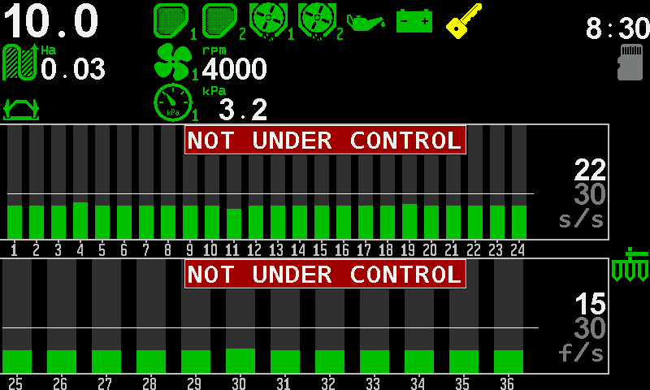
- “NOT UNDER CONTROL”. The rows of this diagram are not watched.
- Columns under the line. Every row delivers less than the level.
- Control line. Dragged above the real flow.
- Alarm level. Higher than the machine sows.
- Measured rate. Lower than the alarm level.
“NOT UNDER CONTROL” opens no alarm window; at the Operator level the panel sounds the alarm instead. Rows under the line are not under control on purpose: the panel refuses to guard a level that was set above what the machine really delivers. Lower the level until the columns stand above the line, or let the panel set it with a double tap: Set the alarm level automatically.
Whether the machine is seeding at all, the panel decides by the share of rows that are seeding — the sensor setting “Percent of sowing,%”, 20 % by default. On the headland the rows drop out of control; on the next pass they come back, with or without a work position sensor. The panel says so with sound: three short beeps when the seeding stops, one short beep when it starts again.
What every colour and symbol of a column means, and the four states of a section: Column colours and section states.
Column colours and the four states of a section
What each colour and symbol of a column on the section diagram means, and the four combinations of control and product application a section can be in.
How the diagram is built — rate line, ticks, control line — is in The section diagram. This page lists what a single column can look like.
Column colours
| What you see | What it means |
|---|---|
| Green column | The row sows normally. |
| Blue column | The row sows more than the target allows (“Precise” and “Hybrid”). |
| Yellow column | The row sows less than the target allows (“Precise” and “Hybrid”). |
| Background blinking dark red, no column | The row sows almost nothing while the machine is seeding — a blocked or empty tube. |
| White column with ! | The control of this section is switched off. Nothing about it is watched. |
| Red × | The sensor does not answer. |
| Red ?, column blinking red | A device of the wrong kind answers in place of this sensor. |
| Yellow ? | The sensor has just received its settings, or it counts seeds but the panel has no speed to judge them by. |
| Grey hatching over the whole column | The section is shut off for the tramline, or its product application is switched off. |
| Green hatching at the bottom of a grey column | A small flow in a shut-off section, still within what is tolerated. |
| Red hatching in a grey column | The shut-off section sows into the tramline. |

The four states of a section
Each section has two independent switches: whether the panel watches it (control), and whether the machine applies through it (product application).
| Control | Application | What it means | What the column shows |
|---|---|---|---|
| on | on | Normal work. | The normal column. |
| on | off | The row deliberately does not sow — a tramline row — and the panel knows it. | Grey hatching. |
| off | on | The row sows, but nobody is checking it. | White with ! |
| off | off | The section is out of the work altogether. | White with ! |
Both switches are items of the sensor's context menu — touch and hold the column of the section:
- “Disable control” / “Enable control”, at the Operator level. See Take a sensor into or out of control.
- “Product application”, at the Agronomist level. See Access levels.
Indicators of the home screen
Every indicator of the home screen with all its states — what you see, what it means, what to do.
Where each indicator sits is shown in The home screen. This page says what each one means, state by state. Touch and hold any indicator to open the context menu of its device.
How to read any indicator


Almost every indicator follows the same rule. Learn it once and you can read an indicator you have never seen.
| What you see | What it means |
|---|---|
| Normal. The device answers and its value is inside the limits. | |
| Red icon, blinking | Alarm. The device answers, but the value has left the limits. An alarm window follows after the alarm delay. |
| No answer from the device. The value is shown as XXXX. | |
| The device is in the profile, but its control is switched off. The value is shown as !!!!. | |
| Icon alternating with a red ? | A device of the wrong kind answers in its place. The value is shown as ????. |
| Not a fault. A state you have chosen or that needs your attention: implement raised, markers up, ignition off, application locked by hand. |
Speed
The travel speed in km/h, large, at the top left. Messages about the speed replace the figure and blink about once a second, so that the figure stays readable.
| What you see | What it means |
|---|---|
| A number in white, e.g. 10.0 | Normal. |
| “SLOWER” on red | You drive faster than the maximum set for the speed sensor. Slow down. |
| “FASTER” on red | You drive slower than the minimum. Speed up. |
| XX.X in red, blinking | No answer from the device that carries the speed sensor. |
| ???? in red | A device of the wrong kind answers in place of the speed sensor. |
| !!.! in white | The speed sensor is not under control. |
| A yellow number alternating with “IMITATION” | The speed is simulated from the setting of the speed sensor, not measured. See Work without the speed sensor. |
| INCREASE IMITATION / DECREASE IMITATION | The simulated speed itself is outside the permitted range. Change the setting, not the travel speed. |
| “Sensor” with a number | One of two speed sensors has failed. |
| “Settings” | The minimum and the maximum speed contradict each other. |
“SLOWER” and “FASTER” are not alarm windows. They stay in the speed field for as long as the speed is wrong, because you have to see them while correcting it. Speed from the built-in receiver: GPS.
Clock
The clock slot at the top right is shared by several messages.
| What you see | What it means |
|---|---|
| The time in white | Normal. |
| BAT in red, for about a second in every four | The clock battery is low. The clock still runs; between the flashes the time is shown in red. Have the battery replaced. |
| XX:XX in red, blinking | The clock chip does not answer. Everything the panel records carries a wrong date and time. |
| IMITAT in yellow | The imitation mode of the service menu is on. |
| Blue hours:minutes, then TRIAL, then blank | A trial period is running; the blue figure is the time left. |
The clock is set in “Settings” → “Change Date&Time”: tap each line and swipe it to its value, then tap “Set” twice — once to select it, once to store the time. Leaving without “Set” keeps the old time.
Memory card

A card symbol next to the clock, or in the right-hand column. Shown while a microSD card is in the slot and ready to be written to.
Hopper

A full green hopper is normal. An empty red one, blinking, means the level has fallen below the sensor: refill.
Metering unit

The rotation of the dispenser shaft. While the shaft turns, the icon turns — the fastest way to see that the metering unit really runs. Red means no rotation, or not the speed required.
Fan

The fan speed in revolutions per minute (rpm). Green is normal; red — above the maximum or below the minimum.
Pressure

The vacuum or the positive air pressure in the distribution system, in kPa. Green is normal; red — outside the permitted range.
Engine sensors


The sensors of the engine that drives the fan.
| Indicator | Green | Red or yellow |
|---|---|---|
| Oil pressure | Normal | Red: the oil pressure has fallen below the permitted level. |
| Battery charge | Normal | Red: the battery is not being charged. |
| Ignition | Green key: ignition on | Yellow key: ignition off. Not a fault, and never an alarm window. |
| Fuel level | Normal | Red: little fuel left in the tank. |
| Air filter | Normal | Red: the air filter is clogged; clean or replace it. |
Area

The area treated on the active field, in hectares.
Population

In the “Precise” mode: the actual seeding rate in thousands of seeds per hectare.
Product rate by weight

Shown when products are applied by weight; one indicator per product, with its number. It shows one figure, in kg/ha.
| What you see | What it means |
|---|---|
| Icon green, figure white | Normal. While the actual rate stays inside the permitted deviation, the figure shown is the target. |
| Icon red, blinking | The actual rate is outside the permitted deviation from the target. |
| Field lit | You have just set the target. |
To set the target, touch and hold the indicator. The number pad opens with the caption Product and its number; type the rate, 10.0 to 500.0 kg/ha, and touch “OK”.
Dosing by weight is not possible

A red blinking product icon in the right-hand column. The panel has worked out that the target cannot be held at any travel speed: the lowest speed at which the metering rollers can deliver the rate is already at or above the highest.
What to do. Check the target rates first — one product asking too much closes the window for all of them. Then check the metering rollers. The speed limits the panel calculated are on the “Information” screen of the speed sensor.
Markers

| What you see | What it means |
|---|---|
| Green, both arms down | Both markers are lowered. |
| Green, one arm down | Only that marker is lowered. |
| Yellow, both arms up | Both markers are raised. On a machine that changes the tramline bout by the markers, the bout changes now. |
A machine with one marker has one icon that shows that marker down or up.
Implement position


Green — lowered, in work. Yellow, blinking — raised, in transport, not applying.
Tramline bout

Shown only if the tramline is switched on. The large number is the current bout, the small one above it the number of bouts in the rhythm.
| What you see | What it means |
|---|---|
| Tramline icon grey | The bout changes by itself at the end of every pass. |
| Tramline icon yellow | The bout does not change by itself: the machine has no marker or work position sensor that answers and is under control. |
| A yellow symbol blinking in place of the icon | The bout could change by itself, but automatic change is switched off. |
How the bout is counted: Set up the tramline rhythm.
Manual lock

A yellow hand, blinking, in the right-hand column: product application is locked by hand. The machine applies nothing, however it moves. Not shown while application is allowed. It appears on machines with dispenser electric motors or a liquid fertilizer pump. See Lock product application by hand.
Actuator failure

One icon for all electric motors and tramline actuators together, in the right-hand column. Not shown at all while everything is in order.
| What you see | What it means |
|---|---|
| Red, blinking | At least one motor or actuator is in an alarm state. |
| Alternating with white [!] | The control of at least one actuator is switched off. |
Which one and why is on the Motors screen.
Liquid fertilizer pump
| Indicator | What it shows |
|---|---|
| In L/min when the machine has liquid section sensors, otherwise in L/Ha. Green, red, × and [!] as usual. While the rate stays inside the permitted deviation, the figure shown is the target. | |
| How hard the pump works. Yellow at 99 % and above: the pump is at its limit — drive slower, or the rate falls below the target. ---- blinking red: the controller gives no load figure. | |
| Only if the pressure sensor is switched on in the pump settings. Red: the liquid pressure is too high. ---- blinking red: the pressure sensor is broken or gives no reading. |
The built-in GPS receiver
What the satellite symbol on the home screen tells you, how the panel can take the travel speed from GPS, and what happens when the signal is poor.
The Hectare 5 has a GPS receiver of its own. The panel uses it in two ways: it shows how many satellites it receives, and — if it is set to — it takes the travel speed from the satellites instead of from a wheel sensor.
The satellite symbol
On a machine with a speed sensor in the profile, a satellite symbol stands in the right-hand column of the home screen, with the number of satellites in use beside it.
| What you see | What it means |
|---|---|
| Satellite grey | The receiver works, but the speed is not taken from it. The number shows what it receives. |
| Satellite green | The speed comes from GPS; more than 6 satellites — a good signal. |
| Satellite yellow | The speed comes from GPS; 4 to 6 satellites. Usable, watch it. |
| Satellite red | The speed comes from GPS; fewer than 4 satellites. The speed cannot be trusted. |
Speed from GPS
Whether the speed comes from the receiver is the setting “GPS internal” in the context menu of the speed sensor (touch and hold the speed field). It needs the Agronomist level. See Speed sensor.
When GPS is the speed source and fewer than four satellites are received, the panel raises the alarm “Poor GPS signal quality”. Everything the panel calculates from the speed — area, rates, deviations, the drive of the dispenser motors — then depends on a weak signal. Move into the open, or switch back to the wheel sensor.

The GPS screen
On the second home screen, a tap on the GPS symbol opens a screen with the receiver's own data: the speed it measures, the date and time it receives (UTC, not the local time of the panel), and the number of satellites in use and in view. Below them runs a log of the receiver for the service engineer. The texts on this screen are in English in every panel language. Leave it with a long swipe up.

The second home screen
The second home screen — what is on it, how to open and close it, and what its chevrons, tiles and symbols do when touched.
The second home screen shows the work in large figures and the dispenser motors as a row of tiles. It suits a machine whose seeding rate is held by dispenser electric motors, where the panel watches the motors and the main working units rather than a diagram of sections.
Open it from the home screen with a long swipe to the right. Close it with a long swipe to the left — it returns to the home screen. It is not part of the circle of working screens, and the panel never opens it by itself.

- Seeding rate. In seeds per metre.
- Travel speed. In km/h; yellow while it is simulated. Touch and hold it for the context menu of the speed sensor. Speed
- Settings symbol. A tap opens the main menu.
- GPS symbol. A tap opens the GPS screen. GPS
- Red chevrons. A tap takes the outermost motor on that side out of control.
- Green chevrons. A tap takes the next motor towards that side back into control.
- Target rate. Shown in the “Precise” mode. Touch and hold it until it lights up, then swipe up or down to change it.
- Motor tiles. Number and value of each motor; the icon alternates with the state sign — STOP, or a red × with XXX. Touch and hold a tile for its context menu.
- Stop symbol. Touch and hold it to lock or unlock product application. A short beep confirms.
On a machine with a fan, a pressure sensor or a pump, the unit value stands at the left of the top line — one at a time. A tap shows the next one; touch and hold opens its context menu.
Each motor icon alternates, about once a second, between the picture of the motor and the sign of its state. What the states mean: Motors screen.
The chevrons are always on this screen. On a machine without dispenser motors they have nothing to act on.
What you can do here
| To do this | Do this |
|---|---|
| Open the main menu | Tap the settings symbol |
| Change the seeding rate | Touch and hold the rate, then swipe up or down. It stays within the permitted limits. A tap elsewhere ends it. |
| Set the target of a product by weight | Touch and hold its kg/ha tile; type the rate on the number pad |
| Take motors out of or into control | Tap the red or green chevrons. Confirm with “Yes” if the panel asks. |
| Open the settings of a motor | Touch and hold the motor tile |
| Lock or unlock product application | Touch and hold the stop symbol. A short beep confirms. |
| See the receiver's data | Tap the GPS symbol |
| Return to the home screen | Long swipe left |
The working screens and how to move between them
The four working screens in their circle, the second home screen beside it, and the swipes that get you from one to another — including the way back home from Table and Statistics.
The panel has four working screens in a circle, and a fifth that stands apart.
| Screen | What it is for |
|---|---|
| Home screen | The diagrams of the sections, the indicators of the devices, the speed, the area and the rates. The panel starts here. |
| Table | The readings of every section in figures, as a list. Several tables, depending on the control mode. |
| Statistics | The results of the work by field: area, path, quantities, quality. |
| Motors | The dispenser electric motors, and the tramline actuators if the machine has them. Present only if the profile holds at least one motor or tramline actuator. |
| Second home screen | Large figures and the motor tiles. Outside the circle. |
The circle
A long swipe to the left — one finger, across more than a third of the screen — moves to the next screen, always in the same direction, and returns to the home screen from the last one:
Home screen → Table → Statistics → Motors → Home screen.
Without motors and tramline actuators in the profile, there is no Motors screen and Statistics returns straight to the home screen.
Every way from one screen to another
| From | Gesture | To |
|---|---|---|
| Home screen | Long swipe left | Table |
| Home screen | Long swipe right | Second home screen |
| Table | Long swipe left | Statistics |
| Statistics | Long swipe left | Motors (home screen, if the machine has none) |
| Motors | Long swipe left | Home screen |
| Motors | Long swipe right | Statistics |
| Second home screen | Long swipe left | Home screen |
A short swipe is not taken as a move to another screen; on Table and Statistics a short swipe up or down scrolls instead.
Gestures on the working screens
| Screen | What it does | Gesture |
|---|---|---|
| Home screen | Opens the main menu | Tap with two fingers |
| Home screen | Sets the alarm level from the real rate | Double tap with one finger, while applying |
| Table | Scrolls the rows | Swipe up or down |
| Table | Next or previous table | Long swipe right or left with two fingers |
| Table | Asks whether to zero the readings | Tap with two fingers |
| Statistics | Scrolls the report, one line per swipe | Swipe up or down |
| Statistics | Shows another field | Swipe right or left with two fingers |
| Statistics | Opens the menu of the screen | Tap with two fingers |
| Motors | Opens the context menu of a motor | Touch and hold its tile |
The full list per screen, menus and windows included: Touch zones and gestures.
The Table screen
The readings of every section in figures — which tables your machine has, what each column means, and how to read the colours.
The Table screen shows the readings of every section as figures, one line per section. It answers the question the diagram cannot: which section exactly, and by how much. Open it from the home screen with a long swipe to the left. It has no way back: a further long swipe left takes you on to the Statistics screen and round the circle to the home screen (Working screens).
A planter in the “Precise” mode

- #. The number of the section.
- sds/m. Seeds per metre, measured now.
- Q.%. Quality — the share of seeds placed singly, as intended.
- Db%. Doubles — two seeds where one was intended.
- Sk%. Skips — a gap where a seed was intended.
- ks/Ha. The applied rate in thousands of seeds per hectare (in the second table: seeds per metre).
- %. The deviation of this section from the rate that was set.
- Table number. This table and how many there are, in the corner. Shown only when there is more than one.
- Section number on yellow. Something in this line has drifted towards its limit.
- Value on yellow. The figure that drifted.
- Totals. The same columns for the whole machine.
A value on yellow is drifting towards its limit; on red it is beyond it. A whole line in grey with ! is a section taken out of control; a line in red with × is a sensor that does not answer, with ? a device of the wrong kind.
A drill in the “Flow” mode

- #. The number of the section.
- sds/s. Seeds per second. Dashes while nothing is counted.
- Deviation scale. From −50 % through 0 to +50 %.
- Deviation bar. How far this section stands from the rate that was set.
- %. The same deviation as a figure.
- Table number. Here table 1 of 2 — the second holds the fertilizer sections.
- Lowest deviation. The section furthest below the rate.
- Highest deviation. The section furthest above the rate.
- Recalculation interval. The stretch over which the figures are gathered — “Recalculation,m” of the sensors.
Which tables your machine has
| Table | Shown when |
|---|---|
| Seed counters — seeds per second or per metre, with the deviation bars | Always. |
| Rate per area (thousands per hectare) and rate per distance (seeds per metre) | Only in the “Precise” seeding control mode. |
| Dry fertilizer | The machine has fertilizer sensors and the fertilizer control mode is not “Precise”. |
| Liquid fertilizer | The machine has liquid fertilizer sensors. |
In the “Precise” mode a planter has three seed tables: rate per area (1/3), rate per distance (2/3), and the seed counters (3/3) — the count of seeds each section has sown, beside the deviation bars, with the total for the machine at the bottom.

Working with the screen
| What you want | Gesture |
|---|---|
| Next or previous table | Long swipe right or left with two fingers |
| Scroll the lines | Swipe up or down |
| Zero the readings | Tap with two fingers — Zero the readings |
| Go on to Statistics | Long swipe left |
On large machines the rows do not fit on one page: swipe up and down to scroll them. A line that drifts turns yellow while you watch.
The Statistics screen
The report of the work on each field, block by block and line by line — and the menu that chooses the field, saves the report and erases it.
The Statistics screen is the report of the work: how far you drove, how much you covered, how much you sowed, and how evenly. It is kept separately for each of five fields and survives switching off. Open it from the Table screen with a long swipe to the left. It has no way back: a further long swipe left goes on to the Motors screen, or to the home screen on a machine without motors.
The report is one long list. Swipe up or down to scroll it, one line per swipe.
The head and the work on the field
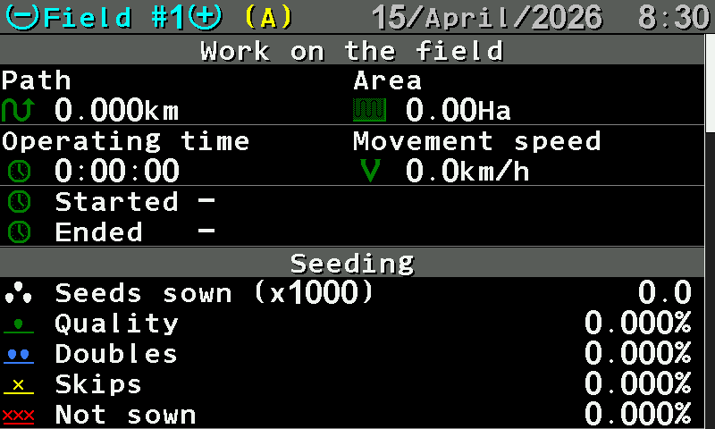
- Field number. Field # and the number of the field whose report you see. A two-finger swipe right or left shows the next or the previous field.
- (A). This is the active field — the one the panel writes to now.
- Date and time. Today's date and the time of day.
- Path. Distance driven, in km.
- Area. Area covered, in Ha.
- Operating time. Hours, minutes and seconds of work.
- Movement speed. The average travel speed.
- Started / Ended. When the work on this field began and ended.
- Seeding. The next block — see below.
The seeding block

- “Seeds sown (x1000)”. The total, in thousands of seeds.
- “Quality”. The share of seeds placed singly, as intended. Judge the work by this number.
- “Doubles”. Two seeds where one was intended.
- “Skips”. A gap where a seed was intended.
- “Not sown”. The share of the run when nothing came out at all.
- “Factical” / “Setuped”. The two column headings: what was actually applied, and what was set.
- “Population,ks/Ha”. In thousands of seeds per hectare; the deviation in brackets.
- “Rate, s/m”. In seeds per metre; the target on the right.
- “Sown” / “Not sown” / “Unknown”. The field split three ways, in hectares.
- Bar. The same split as a coloured bar: green sown, red not sown, grey unknown.
- “Seed sensors”. The next block — section by section.
“Unknown” is the area driven while the panel could not judge — not a fault, but not proof of work either.
Section by section

- “Seed sensors”. One block per section follows.
- Section. The section number, and the seeds it counted.
- q d s n. Quality, doubles, skips and not sown for this section, in per cent.
- Sown / not sown / unknown. The share of each for this section, and the bar.
- Population. Thousands per hectare for this section, with its deviation.
- Spacing. Seeds per metre for this section, with its deviation.
This is where an uneven drill shows itself. A section with a lower quality than the rest, or a longer red part of its bar, points at that row: a blocked outlet, a worn disk, a sensor that needs cleaning.
Blocks that appear on other machines
| Block | What it holds |
|---|---|
| “Work without alarms control” | The part of the work the panel was not watching — driven with the control switched off or locked. |
| “Speed control” | How far and how long you drove outside the permitted speed range. |
| “Fertilizing”, liquid fertilizer | Fertilized / not fertilized / unknown, if the machine applies them. |
| Product | For a product applied by weight: the quantity applied, and the actual against the set rate in kg/ha, on the line Factical: … Setuped: …. |
The menu of the screen
Tap the screen with two fingers.

| Item | What it does |
|---|---|
| “Select field” | Makes the field shown the active one — the panel writes to it from now on. Shown only while you look at a field that is not active. If that field was worked with a different set of products by weight, the panel asks to erase its data first. |
| “Statistics” | Switches the report between “Short” and “Full”. Not shown on a machine without a speed sensor. |
| “Mileage” | Path in km and area in ha over the whole life of the system. These totals cannot be reset. Without a speed sensor, the accumulated running time instead. |
| “Save to SD-card” | Writes one field, or all of them, to the memory card. Shown while a card is ready. |
| “Zero statistics” | Erases the statistics of the field. At the Operator level the panel asks for the PIN of a higher level first; above Operator it asks “Are you sure?”. |
The Motors screen
The dispenser electric motors and the tramline actuators of the machine, one tile each — how to read a tile and how to reach a motor's settings.
The Motors screen shows the dispenser electric motors of the machine, one tile each, and the tramline actuators if the machine has any. Look here when a row stops sowing and you want to know whether the motor is the reason.
It exists on any machine whose profile holds at least one electric motor or one tramline actuator. Reach it from the Statistics screen with a long swipe to the left. Leave it with a long swipe to the left to the home screen, or a long swipe to the right back to Statistics.
- Motor 1, STOP. Yellow, blinking — the motor is serviceable, but product application is not running.
- Value of motor 1. The driven shaft speed in rpm.
- Motor 2, red ×. No connection to this motor.
- XXX. No value, because the motor does not answer.
Reading a tile
The colour of the symbol is the state. The value beside it is the driven shaft speed in rpm. On the second home screen the same tiles show, in the “Precise” control mode, the seeds per metre measured by the seed sensor of that row.
| Symbol | Value | State |
|---|---|---|
| Motor, green | the figure | Normal. The motor is under control and driven. |
| STOP, yellow, blinking against the motor | the figure | The motor is serviceable, but product application is switched off. Nothing is wrong with it — the system is simply not applying. |
| Motor, red | the figure | The motor is in an alarm state. Read the alarm for the reason. |
| ×, red | XXX | No connection. Check the cable and the connector first. |
| !, outlined | !!! | The motor is taken out of control. It is neither driven nor watched. |
Tramline actuators
| Actuator symbol | State |
|---|---|
| Pulled in or pulled out, green | The actuator has reached its position. |
| Pulled in or pulled out, yellow | The actuator is moving to that position. |
| Alternating between in and out, yellow | The panel cannot tell the actuator's position. |
| Blinking red | The actuator is in an alarm state. |
| Blinking red × or ? | No connection, or a device of the wrong kind. |
| Blinking white | The actuator is taken out of control. |
Working with the screen
| What you want | Gesture |
|---|---|
| The settings of one motor or actuator | Touch and hold its tile |
| Back to the Statistics screen | Long swipe right |
| On to the home screen | Long swipe left |
The touch and hold opens the context menu of the motor you pressed. Its “Information” item shows the motor's state, and for a controller fault the code of the last fault. Here you see every motor of the machine at once and can choose the one that misbehaves.
Change the target rate
Raise or lower the rate the panel holds and guards, from the home screen, while seeding — by touch.
The rate field at the right end of each diagram shows two numbers: the measured rate on top, the target below it. In the “Flow” mode the target is the alarm level of the diagram — see The section diagram.
On a diagram
On the home screen, touch and hold the diagram whose rate you want to change, for more than half a second. Its target figure lights up.
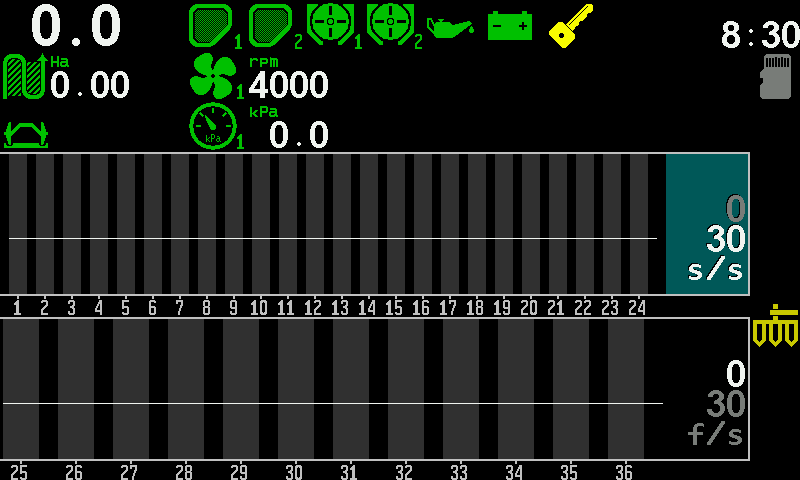
The seed diagram with its target figure lit for editing. Swipe up over the screen to raise the target, down to lower it — one step per swipe. The target stays within its permitted limits.
Tap the screen outside the diagrams to finish. The figure stops being lit and the new target is in force.
To change another diagram — fertilizer after seed, say — touch and hold that diagram instead.
For a product applied by weight
Touch and hold the kg/ha indicator of the product. The number pad opens with the caption Product and the number of the product.
Type the target, from 10.0 to 500.0 kg/ha, and touch “OK” (Entering numbers). A tap outside the pad leaves the target as it was.
On the second home screen
Touch and hold the rate until it lights up, then swipe up or down. A tap elsewhere ends it. See Second home screen.
Lock product application by hand
Stop all product application with one touch and hold, and start it again — what the lock does and how to see that it is on.
The manual lock stops all product application: the dispenser motors and the pump do not run, however the machine moves. Use it to cross a field already sown, to drive on the road with the implement lowered, or when you work without the speed sensor.
The lock exists on machines with dispenser electric motors or a liquid fertilizer pump.
On the home screen, touch and hold an empty place in the right-hand column of indicators — not on an icon — until the panel beeps once.
Check the right-hand column. A yellow hand blinks there: application is locked.
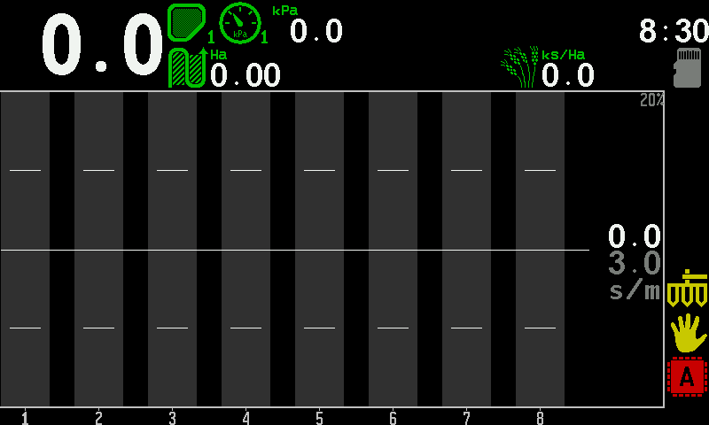
The right-hand column of the home screen with the yellow hand. To unlock, touch and hold the same place again. One short beep; the hand disappears.
A touch and hold on an icon of the column opens the context menu of that device instead.
On the second home screen, touch and hold the stop symbol — the same lock, the same beep.
What the lock changes elsewhere
- The motor tiles on the Motors screen show a yellow STOP — serviceable, not applying.
- The product application control does not start when you move off — the lock must be off for the control to start (Quick start).
- The work done while locked is counted in the statistics as “Work without alarms control” (Statistics).
When the panel locks by itself
Switching speed imitation on locks product application. A panel that is switched on with imitation already on starts locked as well. Unlock by hand when you are ready to apply: Work without the speed sensor.
Set the alarm level automatically
Let the panel set the alarm level of the diagrams from the rate the machine really sows, with one double tap — grain drills in the "Flow" or "Hybrid" mode.
On a grain drill the seeds arrive too close together to be counted one by one, so the panel guards each row against an alarm level: the line on the diagram. Set it too high and every row sinks under the line — “NOT UNDER CONTROL”. Set it too low and a half-blocked row goes unnoticed. The panel can set it for you from what the machine really sows.
This works in the “Flow” and “Hybrid” modes, for the seed and the dry fertilizer diagrams, and for liquid fertilizer in the “Flow” mode. In the “Precise” mode the double tap changes nothing.
Start seeding at your normal speed, with product flowing through every row.
Double tap the home screen with one finger — two quick taps on the same place.
The panel beeps once and lights the rate field: the new alarm level is set from the rate being sown now — half of it in the “Flow” mode, one tenth of it in the “Hybrid” mode.

The diagrams after the double tap: the columns above the line, the rate field lit. Check that every column stands above its line. The light goes out by itself after a few seconds.
The double tap works only while product is being applied. Standing still, nothing happens.
What the line means and why rows under it are not watched: The section diagram.
Take a sensor into or out of control
Stop the panel from watching one sensor — a section that is shut off, a broken sensor — and take it back later.
A sensor out of control is not watched: the panel raises no alarm about it, whatever it reports. Take a sensor out of control when its section is out of work on purpose or when the sensor is broken and you must finish the field. Take it back as soon as you can.
Take a sensor out of control
On the home screen, touch and hold the sensor — its column on the diagram, or its icon. Its context menu opens.
The context menu of a seed sensor. Tap “Disable control” to select it, and tap it again.
The first time in a session, the panel asks “Are you sure that you want disable control?”. Touch “Yes”. A touch outside the window cancels.

The question before control is switched off. The column turns white with ! (an icon alternates with a white [!]). The sensor is no longer watched.
Take it back into control
Do the same and choose “Enable control”. The first time in a session the panel asks “Are you sure that you want enable control?”; confirm with “Yes”. A seed sensor taken back into control shows a yellow ? for a few seconds while it receives its settings.
When the statistics must be erased
For some sensors the panel first asks to erase the statistics of the active field: it says “Need to erase data, for selected field!” and asks again.
- “Yes” erases the statistics of the active field and changes the control. At the Operator level the panel first asks for the PIN of a higher level; a wrong PIN shows “Invalid PIN” and nothing changes.
- “No” leaves both as they are.
The speed sensor cannot be taken out of control — its context menu has no such item. Motors are taken out of control the same way, from their tile on the Motors screen, or with the chevrons on the second home screen. What the four combinations of control and product application mean: The four states of a section.
Zero the readings of the Table screen
Set the seed and fertilizer counters of the Table screen to zero — for a new field or a new seed lot — without touching the field statistics.
The Table screen keeps counting from the moment its readings were last zeroed. Zero them when you start a new field or a new seed lot, so that the counters and deviations describe only the new work.
Open the Table screen: a long swipe to the left on the home screen.
Tap the screen with two fingers. The panel asks “Zero readings?”.

The question before zeroing: Yes in green, No in red. Touch “Yes”. The counters of every seed, dry fertilizer and liquid fertilizer sensor are set to zero.
“No”, or a touch outside the window, leaves everything as it was.
To get back to the home screen afterwards, keep swiping left — through Statistics (and Motors) to the home screen. The Table screen has no way back (Working screens).
Only the counters of the Table screen are zeroed. The field statistics are not touched; they are erased with “Zero statistics” in the menu of the Statistics screen.
Fill the disks with seeds
Turn the seed disks of a planter with dispenser motors until every disk holds seed, so that sowing starts from the first metre — how to run it and read the result.
This applies only to planters with seed dispenser electric motors in the “Precise” control mode. Without motors in the profile, or in another mode, the menu item is not shown.
When the disks are driven by electric motors, they stand empty until the motors run. Drive off with empty disks and the first metres of every row get nothing: each disk has to pick up seeds and carry them round to the drop point first. Filling turns the disks while the machine stands still, so that sowing starts from the first metre.
Stop the machine. The item is shown only while the machine stands still.
On the home screen, tap with two fingers. The main menu opens with “Fill the disks with seeds” already selected; tap it once more.
The main menu with Fill the disks with seeds selected. The panel asks “Are you sure?”. Touch “Yes”. “No”, or a touch outside the window, cancels.

The question before the disks turn. Watch the tiles. Each motor turns its disk until the seed sensor of its row registers the first seed. At the end the panel beeps three times and shows “Operation complete.”
Touch “Close” to return to the home screen.
To stop before the end, touch “Cancel”: the motors stop at once and go back to the seeding control.
Reading the screen

- Green tile. Done: the seed sensor registered a seed, the disk is filled.
- Dark red tile. Failed: the disk could not be filled. The motor number is bright red.
- Reason letters. Why the tile failed — see the table below.
- “Operation complete.” Every motor has finished.
- “Close”. Returns to the home screen. While the operation runs, this button reads “Cancel”.
| Tile | State |
|---|---|
| Dark grey | Waiting its turn. Up to eight motors run at the same time; the rest wait. |
| Yellow | Running: the disk is turning. |
| Green | Done. |
| Dark red | Failed. |
Each motor turns its disk at 4 rpm of the driven shaft. If no seed is registered within 1.25 revolutions — about 19 seconds — that motor is stopped and marked as failed. A motor already in an alarm state is marked as failed at once. With the fertilizer control mode also in “Precise”, the fertilizer motors are run the same way.
Letters on a failed tile
The colour of the letter matters as much as the letter: red means a fault, white means taken out of control.
| Letter | Meaning |
|---|---|
| m red | A fault of the dispenser electric motor during the operation. |
| m white | The motor is taken out of control and cannot run. |
| g red | The seed sensor registered no seed while the disk was turning. |
| s red | A fault of the seed sensor during the operation. |
| s white | The seed sensor is taken out of control. |
If the seed sensor is out of control, the panel cannot check the disk. A serviceable motor still turns it for about one and a quarter turns, so in practice the disk does get filled — but the panel reports that motor as failed, because it never saw a seed.
Set up the tramline rhythm
What a tramline rhythm is, worked out for your drill and sprayer, how to set it up on the panel by touch, and how the panel counts the bouts.
A tramline is the lane the sprayer will drive in later. You make it now, while sowing, by shutting off one or two sections on certain bouts so that nothing is sown where the sprayer wheels will go. Which bouts those are depends on the width of the drill against the width of the sprayer. That pattern, repeating across the field, is the rhythm.
How a rhythm works — an example
A 6-metre drill and an 18-metre sprayer: every third bout must carry the lane. The rhythm is three bouts long, and actuator 1 shuts its sections off on one of them.
| Bout | Actuator 1 | What is sown |
|---|---|---|
| 1 | shuts its sections off | All rows except the tramline rows — the lane is made. |
| 2 | open | All rows. |
| 3 | open | All rows. |
| 1 again | shuts off | The next lane, 18 m further. |
What the panel allows
| Rhythms stored | Three. One is active at a time. |
| Actuators in one rhythm | Four. On a machine that makes tramlines by stopping dispenser motors, the motors take their place. |
| Cut-off bouts per actuator | Four different bouts of the same rhythm. |
| Bouts in a rhythm | 1 to 50. |
Setting it up
The tramline items sit under “Seeding machine parameters”, which needs the Agronomist level: Enable the Agronomist level. The “Tramline” item is shown only on a machine that can make tramlines.
On the home screen tap with two fingers. Tap “Settings”, and tap it again.
Tap “Seeding machine parameters”, and tap it again.
Tap “Tramline”, and tap it again.

The Tramline menu. Tap “Tramline” and swipe right to “Yes”. Then tap “Tramline rhythm settings” twice. The rhythm form opens with rhythm 1 selected.
On “Rhythm”, swipe right or left to choose the rhythm number. Tap with two fingers and choose “Select”. The word “Active” appears beside the number — without it the rhythm is stored but not used.
Swipe down to “Bouts”, tap with two fingers and set the number of bouts in the rhythm.
Swipe to the framed cell under the activation heading and tap with two fingers. Choose the number of the actuator, then the bout on which it must shut its sections off.
If the pattern needs it, add more bouts to the same actuator — up to four — with the framed cell at the end of its row, or another actuator with the cell on the empty row below.
Tap with three fingers. The rhythm is saved and the Tramline menu returns. Tap outside the menus until the home screen returns. The tramline indicator shows the current bout and the number of bouts.
A touch and hold anywhere on the form saves the rhythm without leaving it. Return to the Operator level before you work — above it, no alarms are shown.
The rhythm form

- “Rhythm”. The number of the rhythm; a swipe right or left steps through the three.
- “Active”. This rhythm is the one in use.
- “Bouts”. The number of bouts in the rhythm.
- Activation heading. “Tramline actuators activation” on a machine that makes tramlines with actuators; “Tramline motors activation” on one that stops dispenser motors. A machine with both shows both headings.
- Framed cell. Adds an actuator (or motor) and its cut-off bout.
In the form, a swipe up or down moves between lines, a swipe right or left along a line, and a two-finger tap opens the selected cell. “Reset rhythm settings”, in the menu of the “Rhythm” line, returns the selected rhythm to its defaults.
How the bout changes
The panel counts the bouts by itself. Something on the machine must tell it that a pass has ended:
| On the machine | What ends a bout |
|---|---|
| Marker sensors in the profile | At least one marker sensor under control and answering. The change of the marker position ends the bout. |
| No markers | The work position sensor, under control and answering. Raising the implement out of work ends the bout. |
| Neither | The bout does not change. |
When the bout cannot change by itself, the tramline icon on the home screen is yellow (Tramline bout). Check the indicator on the home screen before you start a pass.
Set the screen brightness
Make the screen brighter or dimmer — one item in the Settings menu, set by hand.
On the home screen tap with two fingers. Tap “Settings”, and tap it again.
“Brightness,%” is the first item. Tap it, then swipe right to brighten or left to dim, in steps of 10, from 0 to 100.

The Settings menu with Brightness,% selected. Tap outside the menu to leave it. The new brightness stays in force and is stored by itself.
There is no automatic brightness: the screen stays at the value you set, day and night. Dim it for night work and raise it again in the morning. 0 is the dimmest setting, not off — the screen stays lit.
The same menu holds “Volume” — the loudness of the alarm sound — and “Buttons sound”, the click on every touch. Everything else in the Settings menu: The Settings menu.
Work without the speed sensor
When the speed sensor fails in the field — take the speed from GPS, or finish the work on a simulated speed and control the application by hand.
Symptom. The speed field shows XX.X in red, or the speed stays at zero although the machine moves. Without a speed, the panel cannot calculate area, rates or deviations, and the dispenser motors do not know how fast to turn.
Cause. The speed sensor or the device that carries it does not answer, or the wheel no longer gives pulses.
What to do. Two ways, both through the context menu of the speed sensor — touch and hold the speed field. Both items need the Agronomist level: Enable the Agronomist level.
Take the speed from GPS
Set “GPS internal” to “Yes”. The panel takes the travel speed from its own receiver. Watch the satellite symbol in the right-hand column: green or yellow is usable, red is not. See GPS.
Work on a simulated speed
Touch and hold the speed field. Its context menu opens.
Set “Imitation, km/h” to the speed you will drive, up to 20 km/h. The panel tells you “Settings of Min and Max speed switched off!” — the speed limits are not watched while the speed is simulated.
The panel locks product application by itself: the yellow hand appears in the right-hand column.
Return to the Operator level, so that alarms are shown again.
The speed field now shows a yellow figure alternating with “IMITATION” (Speed).
Control the application with the manual lock: touch and hold an empty place of the right-hand column to start applying on a pass, and again to stop at the headland. See Lock product application by hand.
Drive at the speed you set. The rates are right only as long as the real speed matches it.
When the sensor is repaired, set “Imitation, km/h” back to “No” — swipe left until the value reads “No” — and set the speed limits again.
Details of the speed sensor settings: Speed sensor.
Access levels
The three access levels of the Hectare 5, what each one opens, and what happens to the alarms while a higher level is set.
Not every setting is open to everyone. The panel has three access levels. After every power-on it starts at the lowest one, “Operator”.
| Level | What it opens |
|---|---|
| “Operator” | Everyday work: brightness, volume, language, alarm delay, the clock, the target rates and alarm levels, taking a sensor into or out of control, the mass calibrations. Resetting the statistics asks for a PIN at this level. |
| “Agronomist” | The commissioning settings: “Seeding machine parameters”, “Product rate error,%”, most sensor parameters, the speed and dispenser calibrations, and the “Service” menu with the profile and the device configuration. Needs a PIN. |
| “Service” | Everything above, plus the reset-to-defaults items, “Reset settings”, “Save factory defaults”, the serial number, the trial period and “Imitation mode”. For the service department. Needs a PIN. |
Every settings table in this manual names the level an item needs. An item above your level is not shown in the menu at all — if an item named here is missing, check the level first.
Switch the level
The level is changed in one place only: “Settings” → “User”. Going up a level asks for the PIN of that level; going down does not. Step by step: Enable the Agronomist level.
Ask your dealer or the service support for the PIN.
What happens to the alarms while the level is high
The alarms are not lost while they are hidden — they wait. When you lower the level to “Operator”, the panel drops the ones that have gone away in the meantime and shows the ones that are still true, one window after another — also those you had already closed before you raised the level. After an hour of commissioning at “Agronomist”, expect a short run of alarm windows on the way back down. It is the backlog, not a new fault. How the windows work: How alarms work.
Enable the Agronomist level
The steps, by touch, to raise the access level to "Agronomist" or "Service" before changing settings, and to return to "Operator" afterwards.
Most set-up work — sensor parameters, calibrations, the profile, device configuration — needs the “Agronomist” level. The “Service” level is raised the same way. What each level opens: Access levels.
You need the PIN of the level you want. A PIN opens only its own level: choose “Agronomist” and type the Agronomist PIN.
On the home screen tap with two fingers. The main menu opens.
The main menu. Tap “Settings”, and tap it again. The “Settings” menu opens.
The Settings menu at the Operator level. Find “User” near the end of the menu — swipe up if it is not in view — and tap it. Swipe right until it reads “Agronomist” (or “Service”).
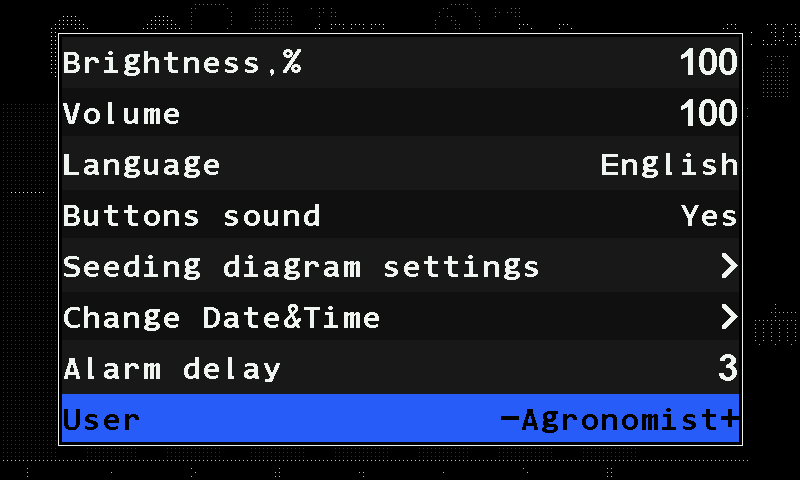
“User” set to Agronomist. Tap “User” again. The number pad opens with “Enter your PIN:”. Type the PIN and tap “OK”.

The number pad asking for the PIN. A short window names the new level, and the “Settings” menu returns with the items of that level — for example “Seeding machine parameters”. Tap outside the menu to leave.
A wrong PIN shows “Invalid PIN” in a red window, and the number pad opens again. To give up, tap outside the number pad; the level stays as it was.
When you come back down, the alarms that are still true are shown one after another. See Access levels.
The profile
What the profile tells the panel, how to check it, what each profile item allows, when the panel refuses a profile, and how it is saved.
The profile tells the panel which devices, and how many of each, are on the machine. A panel usually arrives with the profile already set. Check it before you set anything else: a device missing from the profile is never watched, and a device in the profile that is not fitted raises “Connection lost”.
Check the profile on the home screen
Switch the panel on and wait until the home screen appears. Then look at it:
- No “Connection lost” alarm — the panel has found every device the profile declares.
- No white indicators with an exclamation mark — no device is left out of control.
- No red indicators with an “X” — every device answers.
What the indicators mean: Indicators. How to take a device into control or out of it: Take a sensor into or out of control.
Open the profile
The profile needs the “Agronomist” level (Enable the Agronomist level). Tap the home screen with two fingers, then tap “Service” twice and “Profile” twice. Change the selected item with a swipe right or left.

The profile items
| Item | Range |
|---|---|
| “Seed sensors” | 2 … 120. The menu lets you set 1, but such a profile is refused when it is saved. |
| “Fertilizer sensors” | 0 … 60; seed and fertilizer sensors together not more than 120. |
| “Liq.fert.flow sensors” | 0 … 60 — liquid fertilizer section sensors. |
| “Hoppers” | 0 … 9 |
| “Dispensers” | 0 … 9 — dispenser shaft sensors. |
| “Speed” | “No” / “Control panel” (sensor wired to the panel) / “Input device” (one wheel sensor on an input device) / “Input device (2)” (two wheel sensors on an input device). |
| “Fans” | 0 … 2 |
| “Pressure sensors” | 0 … 3 |
| “Work position sensor” | “No” / “Yes” |
| “Markers” | “No” / “One” / “Both” |
| “No battery charge”, “Emergency oil pressure”, “Ignition”, “Low fuel”, “Air filter” | The engine sensors — “No” / “Yes” each. |
| “EMD of the seeds” | 0 … 60 — seed dispenser electric motors. |
| “EMD of the fertilizers” | 0 … 30 — fertilizer dispenser electric motors; both motor groups together not more than 60. |
| “Tramline actuators” | 0 … 4 |
| “Liq.fert.pump controller” | 0 … 1 |
At the end of the menu follow “Save settings”, “Load settings”, the two memory card items and “Save profile” — see below and Save and load settings.
When the panel refuses a profile
The panel checks the whole profile, not only the item you changed. It refuses a profile when:
- the hopper, dispenser and engine sensors together come to more than 12;
- they come to more than 10 while the pressure and fan sensors together come to more than four;
- the pressure and fan sensors together come to more than five;
- there are fertilizer motors but no seed motors, or fertilizer motors but no fertilizer sensors;
- there are electric motors or a liquid fertilizer pump but no speed sensor.
Save the profile
After changing the profile, tap “Save profile” at the end of the menu, and tap it again.
If nothing was changed, the panel shows “No changes”. If the profile breaks one of the rules above, it shows “Invalid profile!” in red and saves nothing. Otherwise it asks “Are you sure?”.

The question before the profile is saved. Tap “Yes”. The panel shows “Wait...”, then “Saved” and “Restart system”, and restarts by itself.
A tap on “No”, or outside the question window, leaves the saved profile as it was.
Save and load settings
Keep a copy of the settings inside the panel and bring it back, and write the profile to a memory card.
The panel can keep a copy of its settings and bring it back later — useful before you try something out. With a memory card in the slot it can also write the profile to the card. All these items are at the end of the “Profile” menu (The profile) and need the “Agronomist” level.
| Item in the “Profile” menu | What it does |
|---|---|
| “Save settings” | Keeps a copy of the current settings inside the panel. |
| “Load settings” | Brings that copy back. |
| “Save to SD-card” | Writes the profile to the memory card. Shown only while a card is in the slot and ready. |
| “Load from SD-card” | Shows the list of the profiles on the card. Shown only while a card is ready. |
| “Save factory defaults” | Stores the current settings as the factory values. “Service” level only. |
Keep and restore the settings
Raise the level (Enable the Agronomist level), tap the home screen with two fingers and open “Service” → “Profile” — tap each item twice.
Swipe up to the end of the menu. Tap “Save settings” or “Load settings”, and tap it again. The panel asks “Are you sure?”.
The question before the settings are saved. Tap “Yes”. The panel answers “Saved” or “Loaded”.
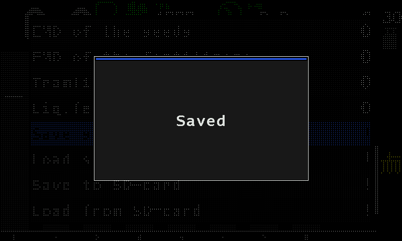
The panel confirms with “Saved”.
If there is no copy to bring back, “Load settings” ends with “FAILURE” in a red window.
Write the profile to the memory card
Tap “Save to SD-card” twice. There is no question: the panel writes the profile and answers “Saved”. If the card cannot be written, it answers “FAILURE”; if the card has gone, “FAILURE” and “Insert SD-card”.
- The files are named automatically, P0001.pfl and onwards, in the PROFILES folder of the card.
- Keep the card for its own panel: a profile file written by one firmware version is very likely not readable by another.
The list of profiles on the card
“Load from SD-card” opens a list of the profile files found on the card. A file the panel cannot read is shown in red. A tap with three fingers closes the list. With no profile files on the card, the item answers “FAILURE”.
The Settings menu
Every item of the panel's own "Settings" menu — brightness, volume, language, touch sound, diagram settings, date and time, alarm delay, access level — with its range, default and access level.
The “Settings” menu holds the settings of the panel itself. Open it from the home screen: tap with two fingers, then tap “Settings” twice. The settings of the individual sensors are elsewhere — see Sensor settings.
- “Brightness,%” — the backlight. The selected item shows its value between - and +; swipe right or left to change it.
- “Volume” — the loudness of the alarm sound.
- “Language” — the language of the screens.
- “Buttons sound” — a click on every touch the screen takes.
- “Seeding diagram settings” — how the seed diagram is drawn. Below.
- “Change Date&Time” — the clock. Below.
- “Alarm delay” — how long a fault must last before the alarm window opens.
- “User” — the access level. Access levels.
The items
| Item | Range and default | Level |
|---|---|---|
| “Brightness,%” | 0 … 100, in steps of 10; default 100. 0 is the dimmest setting, not off. See Screen brightness. | Operator |
| “Volume” | 0 … 100, in steps of 10; default 100. | Operator |
| “Language” | English, Ukrainian, Polish, Hungarian, Romanian, Bulgarian. | Operator |
| “Buttons sound” | “No” / “Yes”; default “Yes”. | Operator |
| “Seeding diagram settings”, “Fertil. diagram settings”, “Liq.fert. diagram settings” | Submenus. Each is shown only when the machine has a speed sensor, its own sensors are in the profile and its diagram is not in the “Flow” mode. | Operator |
| “Change Date&Time” | Submenu. | Operator |
| “Alarm delay” | 2 … 20 s; default 3 s. See How alarms work. | Operator |
| “Product rate error,%” | 3 … 20 %; default 5 %. How far a product dosed by weight, or the liquid fertilizer pump, may stand from its target before an alarm. Shown only when a product is dosed by weight or a pump controller is in the profile. | Agronomist |
| “Seeding machine parameters” | Submenu: width, modes, tramline, calibrations. Hidden when the machine has neither a speed sensor nor a tramline actuator. Seeding machine parameters | Agronomist |
| “User” | “Operator” / “Agronomist” / “Service”. Enable the Agronomist level | Operator |
| “Reset settings” | Returns the settings to the factory values. | Service |
On a machine with two groups of seed sensors, the two diagram items read “Seeding gr.A diagram” and “Seeding gr.B diagram”.
The settings are stored by themselves a few seconds after the last change. Wait a moment before you switch the panel off.
Diagram settings
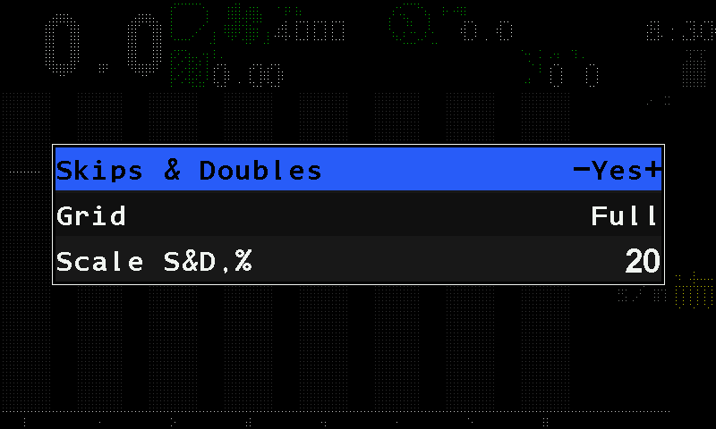
There are three of these menus — seed, dry fertilizer, liquid fertilizer. The liquid fertilizer menu has only “Grid” and “Reset to defaults”.
| Item | What it does |
|---|---|
| “Skips & Doubles” | “Yes” shows the skip and double bars over the last stretch of the path. “Precise” mode only. Default “Yes”. |
| “Grid” | “No” — only the rate line; “Partial” — only the tolerance limits; “Full” — both. Default “Full”. |
| “Scale S&D,%” | The height of the skip and double bars, 5 … 50 % in steps of 5; default 20. “Precise” mode only. |
| “Reset to defaults” | Returns this menu to the factory values. Service level only. |
Change Date and Time
Tap “Change Date&Time”, and tap it again. The fields “Year”, “Month”, “Day”, “Hours”, “Minutes” and “Seconds” open, with “Set” at the end.

The date and time fields. Tap a field and swipe right or left until it shows the value you need — one step per swipe. The days follow the month.
Tap “Set”, and tap it again. The clock takes the new values and the “Settings” menu returns.
Leaving the fields with a tap outside the menu, without “Set”, keeps the old time.
Seeding machine parameters
The working width, the modes of seeding and fertilizing, the tramline, the relation of sections to actuators and motors, and the two calibrations that need the machine to move.
“Settings” → “Seeding machine parameters”. The item needs the “Agronomist” level (Enable the Agronomist level) and is hidden on a machine with neither a speed sensor nor a tramline actuator. Which items it holds depends on the profile.
| Item | Values |
|---|---|
| “Width, cm” | 100 … 2500; default 560. Number pad. |
| “Mode of seeding” | “Flow” / “Hybrid” / “Precise”; default “Flow”. |
| “Mode of fertilizers” | “Flow” / “Hybrid” / “Precise”. |
| “Mode of liq.fert.” | “Flow” / “By area”. |
| “Tramline” | Submenu. |
| “Relation of sensors to actuators” | Opens the mapping screen. |
| “Speed calibration” | Starts the speed calibration. |
| “Dispenser calibration” | “ALL”, or the number of one dispenser; starts the rotation calibration. |
| “Reset to defaults” | Returns the width and the modes to the factory values. Service level only. |
Width, cm
The working width of the implement. The worked area is calculated from it, so it must be entered. Tap the item twice, or swipe on it: the number pad opens. Type the width and tap “OK”; a tap outside the pad keeps the old value. The item is hidden without a speed sensor.
If the statistics already hold work, the panel first asks to erase them — the area of the old width and of the new one cannot be added together.
Mode of seeding, Mode of fertilizers
| Mode | Unit | For |
|---|---|---|
| “Flow” | seeds per second | grain drills |
| “Hybrid” | seeds per metre | grain drills |
| “Precise” | seeds per metre, with skips and doubles counted | precision planters |
The fertilizers can be set to “Precise” only while the seeding is “Precise”. On a machine with two groups of seed sensors the two items read “Mode of seeding gr.A” and “Mode of seeding gr.B”; group B can be “Precise” only while group A is, so set group B to “Flow” or “Hybrid” before you take group A out of “Precise”.
Liquid fertilizer mode
“Flow” (litres per minute) or “By area” (litres per hectare). Shown only when there is no liquid fertilizer pump controller in the profile — with a controller the panel works by area.
Relation of sensors to actuators
Which section sensors belong to which tramline actuator or dispenser motor. When an actuator shuts its sections off, their sensors switch to tramline monitoring. The item is shown only where there is something to relate: tramline actuators, or dispenser motors that are not one to one with the section sensors.
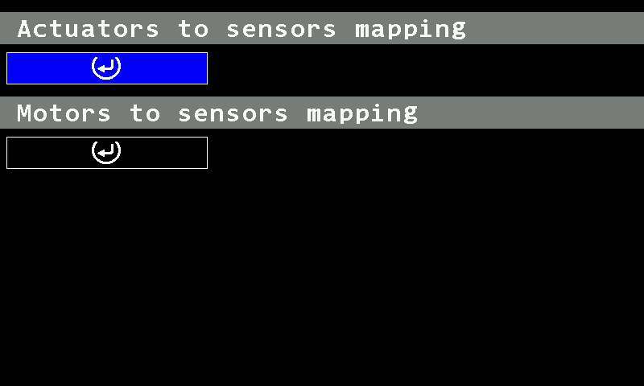
A mapping is a range of sections, “Diapason start” to “Diapason end” — equal numbers mean a single section. Up to four ranges can be attached to one actuator. On a machine with dispenser motors the screen also has “Motors to sensors mapping”.
On the screen, a swipe up or down moves between the lines, a swipe right or left along a line, and a two-finger tap opens the menu of the selected cell — to add a range or to “Remove diapason”. Touch and hold anywhere on the screen to apply the mapping.
Tramline
A submenu with two items: “Tramline” (“No” / “Yes”) and “Tramline rhythm settings”. Shown only on a machine that can make tramlines. Setting up a rhythm: Set up the tramline rhythm.
Speed calibration and Dispenser calibration
The two calibrations that need the machine to move. Both are hidden without a speed sensor. Select “Dispenser calibration” and swipe right or left to choose the dispenser — or “ALL” for all of them at once — then tap it again to start.
Sensor settings
How to reach the settings of one sensor by touch, what its context menu holds, and which calibrations exist and where.
Every sensor, actuator and motor on the machine has its own settings and its own status screen. Both are reached through its context menu. The parameters of each kind of sensor are in the topics that follow this one.
Reach a sensor
Touch and hold the device for more than half a second:
- on the home screen — its icon, or its column on a diagram;
- on the Motors screen or the second home screen — the tile of a motor or a tramline actuator.
The context menu opens. A short tap does nothing. A touch and hold on a kg/ha indicator, on the target of a diagram or on an empty place of the right-hand column does something else — see Touch zones and gestures.
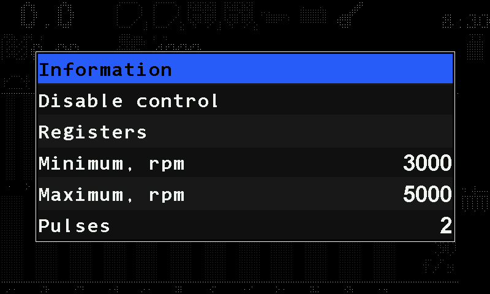
The context menu
| Item | What it does | Level |
|---|---|---|
| “Information” | Opens the status screen of this device. The sensor status screen | Operator |
| “Disable control” / “Enable control” | Takes the device out of monitoring, or back in. Not offered for the speed sensor. Take a sensor into or out of control | Operator |
| “Registers” | A raw view of the device's registers, for the service department. Not part of any procedure. For a motor or the pump controller the item reads “Electric motors” and opens the diagnostic screen of the controllers. | Agronomist |
| The device's own items | For example “Speed calibration” for the speed sensor. | as stated |
| The parameters | Which ones you see depends on the access level. Change the selected one with a swipe right or left. | as stated |
| “Reset to defaults” | Returns this device's parameters to the factory values. | Service |
Tap outside the menu to leave it. Changed values are stored by themselves.
The status screen
“Information” opens the status screen of the device: its identity, its link, its live figures and its active alarms. How to read it: The sensor status screen.
Calibrations
Four calibrations exist. They are not variants of one procedure: each writes different parameters and is reached a different way.
| What it puts right | Where | Level | Machine |
|---|---|---|---|
| Travel speed — rewrites “Factor, %” of the speed sensor. Calibrate the speed sensor | “Settings” → “Seeding machine parameters” → “Speed calibration”, or “Speed calibration” in the context menu of the speed sensor | Agronomist in the menu, Operator in the context menu | drives 100 m |
| Dispenser rotation — “Wheel, pulses” against “Dispenser pulses”. Calibrate the dispenser rotation | “Settings” → “Seeding machine parameters” → “Dispenser calibration” | Agronomist | wheel and dispenser shaft turned together |
| Dispenser mass — “Weight, gr” and “Weight, pulses”. Calibrate the dispenser by weight | context menu of the dispenser sensor | Operator | standing |
| Metering roller mass — “Weight, gr” and “Rotations” of one motor. Calibrate a metering motor by weight | context menu of the dispenser electric motor | Operator | standing |
The context-menu items “Speed calibration” and the motor calibration are offered only while the machine stands still. The two mass calibrations are at the “Operator” level because they have to be repeated whenever the product changes.
The sensor status screen
How to read the status screen of a sensor — channel, address, type, link state, live figures and active alarms — what each kind of sensor shows on it, and how to move through it by touch.
Reached through “Information” in the context menu of a device (Sensor settings). It shows what the panel knows about one device.
The screen

- “Channel #” — which device of the whole list this is.
- The marks either side of the channel number. Swipe left for the previous device, right for the next one. The screen stays open.
- “Address:” — the address the device answers on. Not given in this manual.
- “Type:” — the kind of device and its number, here hopper sensor 1.
- “Link:” — the state of the communication. Table below.
- The figures of this kind of device — here the level on the input of a hopper sensor. Table below.
- “Alarm 1 from 1” — how many alarms of this device are active.
- The name of the alarm — the first of the active alarms.
Some devices show one more line, “Unit:” — the unit the device is connected to, for example “Control panel” for the travel speed sensor.
| Gesture | What it does |
|---|---|
| Swipe right / left | Next / previous device — the screen stays open. |
| Swipe up, or three-finger tap | Back to where you came from. |
Link states
| State | Meaning |
|---|---|
| “Normal” | The device answers. |
| “Not controlled” | The device is out of control: neither the communication nor anything else is watched. |
| “No connection” | The device does not answer. Red. |
| “Wrong device type!” | Something answers, but not the kind of device the profile expects. Red. |
| “IMITATION” | Speed sensor only: the speed is simulated, not measured. Yellow. |
The figures are drawn only while the device is under control, answers, and is of the expected kind. A device out of control shows its identity and nothing else.
What each kind of sensor adds

| Device | What the screen shows |
|---|---|
| Speed sensor | The pulse frequency F= in Hz; with two speed sensors F1= and F2=. Under it the two limits “Min speed, km/h” and “Max speed, km/h”. On a machine that doses a product by weight with electric motors, the limits are those the motors can hold, narrowed by the two settings; a limit the settings cannot meet is written in red as an inequality. Without such motors a limit set to zero is shown as ----, switched off. |
| Hopper sensor | Pin: and the level on the input, "0" or "1". |
| Dispenser shaft sensor | F= in Hz, to three decimals. |
| Fan sensor | F= in Hz. |
| Pressure sensor | P= in kPa. |
| Seed sensor, dry fertilizer sensor | Status: and one of eight states — below. |
| Liquid fertilizer flow sensor | Status: Working, or Working:Tramline in the tramline mode; under it Flow= in L/min. |
| Work position sensor | “Position: Working” or “Position: Transporting”, and Pin: with the level on the input. |
| Ignition, oil pressure, battery charge, fuel level, air filter | Pin: and the level on the input, "0" or "1". |
| Marker sensor | Only the common lines. |
| Tramline actuator | Status: Pulled in, Pulled out, Working while the shutter moves, or Unknown. |
| Dispenser electric motor | Status: Working, or Faulty while any alarm of the motor is active; then “Last fault:” with the controller's code, if there has been one (codes). A universal controller adds IN1[ ] IN2[ ] IN3[ ] with the levels on its three inputs. |
| Liquid fertilizer pump controller | Status: Working or Faulty. With a fault, “Last fault:” and the code. Without one: Flow= in L/min, Load= in per cent, and Pressure sensor: No if there is none, otherwise Pressure sensor= in Bar with the raw signal in mA in brackets. Dashes stand for a value the controller cannot give. |
The eight states of a seed or fertilizer sensor
| Status | Meaning |
|---|---|
| Working | Normal. |
| Working:Tramline | Normal; the sensor is in the tramline control mode for the current bout, or its product application is switched off. |
| Configuring | The sensor has received new settings and is applying them. |
| Calibration in progress | The sensor runs its initial calibration. It takes a few seconds. |
| Clogged | The optical channel is blocked — most likely a blocked seed tube. Red. |
| Light struck | Too much light falls into the optical channel; the sensor may miscount. Red. |
| Faulty | The sensor reports a fault of its own. Red. |
| Unknown | Another fault that cannot be identified. Red. |
Travel speed sensor
The parameters of the travel speed sensor — pulses, wheel diameter, factor, speed limits, imitation, the built-in GPS receiver — and what setting the imitation does by itself.
Everything the panel counts — area, rates, deviations — is worked out from the distance travelled. A speed sensor that is out by a tenth makes every other figure on the panel wrong by a tenth. Set its parameters first, then calibrate it (Calibrate the speed sensor).
Touch and hold the speed field on the home screen to open the context menu of the speed sensor (Sensor settings). All its parameters need the “Agronomist” level (Enable the Agronomist level). The menu also offers “Speed calibration” directly, under “Information”, while the machine stands still.

| Parameter | What it does | Range, default |
|---|---|---|
| “Pulses” | The number of pulses the sensor gives per turn of the wheel. | 1 … 1000; 6 |
| “Count period” | The number of pulses the panel averages over before it works out the speed afresh; a sudden change of speed is taken at once. Hidden when the sensor is on an input device. | 1 … 1000; 1 |
| “Diameter, cm” | The wheel diameter. | 10 … 200; 60 |
| “Factor, %” | A correction of the distance per wheel turn: the panel counts the wheel circumference times this factor. 100 takes the circumference as it is. The speed calibration rewrites it. Number pad. | 1 … 10000; 100 |
| “Seeding criteria” | “Yes” — the section alarms are watched only while the machine moves; “No” — also while it stands. Hidden, and always “Yes”, in the “Precise” mode and on a machine with dispenser motors or a pump. | “No” / “Yes”; “Yes” |
| “Min speed, km/h” | Below this speed the home screen shows “FASTER”. “No” (0) switches the check off. | 0 … 99; “No” |
| “Max speed, km/h” | Above this speed the home screen shows “SLOWER”. “No” (0) switches the check off. | 0 … 99; “No” |
| “Imitation, km/h” | A simulated speed. “No” (0) — the real sensor is used. | 0 … 20; “No” |
| “GPS” | Take the speed from an external receiver. Shown only when one is in use. | “No” / “Yes” |
| “Width, cm” | The track between the two wheels of a two-sensor installation. Shown only with “Input device (2)” in the profile. | 0 … 10000; 280 |
| “GPS internal” | Take the speed from the receiver built into the panel. | “No” / “Yes”; “No” |
The minimum must be below the maximum, otherwise the panel raises “Error in settings of Min/Max” (Speed sensor alarms). With “GPS internal” on, the satellite symbol on the home screen shows the reception, and fewer than four satellites raise “Poor GPS signal quality” — see GPS.
The imitated speed is also held inside the range the dosing allows: a value outside it is pulled back to the nearest limit as you set it. While the speed is imitated, the status screen of the sensor shows “IMITATION” in yellow. Working without a speed sensor: Work without the speed sensor.
The status screen
The status screen shows the pulse frequency F= in Hz (with two sensors F1= and F2=) and the two limits in force. See The sensor status screen.
Calibrate the speed sensor
Drive a marked 100 m so that the panel corrects the factor of the travel speed sensor.
The calibration measures a known distance and corrects “Factor, %” of the speed sensor so that the panel's distance matches it. Before you start, set “Pulses” and “Diameter, cm” of the sensor (Travel speed sensor) — the calibration corrects the distance per turn; it cannot invent the pulses.
There are two ways in:
- “Settings” → “Seeding machine parameters” → “Speed calibration” — at the “Agronomist” level (Enable the Agronomist level);
- “Speed calibration” in the context menu of the speed sensor, while the machine stands still. At the “Operator” level the panel first asks for the PIN of the Agronomist level; at the “Agronomist” level it asks “Are you sure?” — tap “Yes”.
Mark out 100 m on level ground and put the machine at the start.
Tap “Speed calibration”, and tap it again; coming from the context menu, answer the PIN or the question first. The panel shows “Pass 100m and press STOP” with a single “STOP” button.

The speed calibration window. Drive the marked distance and stop at the end.
Tap “STOP”. The panel shows “Done” and closes the window by itself.
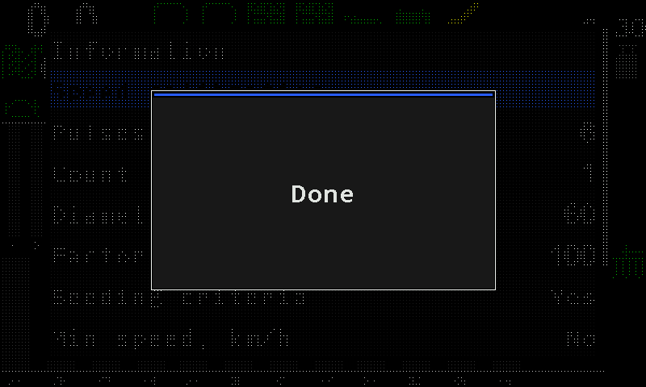
The panel confirms the calibration.
The distance is fixed at 100 m; the panel does not ask for it. It waits half a second after “STOP” before reading the counter and checks the connection once more in that moment — a sensor that drops out on the last metre is reported as a lost connection, not as a bad result.
When it does not work
| The panel shows | Meaning |
|---|---|
| “No speed sensor” | The profile has no speed sensor. The calibration does not start. |
| “Connection lost with the sensor! Calibration canceled!” | The sensor does not answer. |
| “Sensor not controlled! Calibration canceled!” | The sensor is out of control. Take it into control (Take a sensor into or out of control). |
| “FAILURE! The tractor did not move!” | The counter did not move: the sensor gave no pulses at all — not an inaccurate reading, none. Check the sensor and its cable. |
| “Calibration canceled!” | The window was closed some other way than with “STOP”. Nothing has changed. |
Seed sensors and dry fertilizer sensors
The parameters shared by a group of optical seed or dry fertilizer sensors — fraction, sensitivity, rate error, skips and doubles, percent of sowing, tramline tolerance — and the per-sensor switch for product application.
Seed sensors and dry fertilizer sensors are the same kind of device and share one parameter set. Almost everything here is common to the whole group: change it on one sensor and it changes for all sensors of the group. Only two things are set per sensor — whether it is under control (“Disable control” / “Enable control”) and “Product application”. Touch and hold the column of any sensor of the group to open its context menu (Sensor settings).
| Parameter | What it does | Range, default | Level |
|---|---|---|---|
| “Product application” | Per sensor. “No” — the row deliberately applies nothing, and the panel watches it as a shut-off tramline row. Not offered when every sensor of the group has its own dispenser motor. | “No” / “Yes” | Agronomist |
| “Sensitivity” | The sensitivity of the optical channel. Shown only for the sensor types that use it. | 1 … 120; 80 | Agronomist |
| “Fraction” | The sensor's filter for the size of the product particles. The rate, skip and double alarms tell you in which direction to change it. | 1 … 100; 10 | Operator |
| “Correction” | A correction of the detection window of the optical channel. Shown only for the sensor type that uses it. | 100 … 3300, steps of 10; 300 | Operator |
| “Rate error,%” | How far the actual rate may stand from the target before an alarm. “Hybrid” and “Precise” modes only. | 5 … 95, steps of 5; 50 | Agronomist |
| “Doubles error,%” | The share of doubles that raises an alarm. “No” (0) switches the alarm off. “Precise” mode only. | 0 … 95; “No” | Agronomist |
| “Skips error,%” | The share of skips that raises an alarm. “No” (0) switches the alarm off. “Precise” mode only. | 0 … 95; “No” | Agronomist |
| “Recalculation,m” / “Recalculation,sec” | The stretch the skips and doubles are counted over — in metres on a machine with a speed sensor, in seconds without one. | 10 … 50; 20 | Operator |
| “Percent of sowing,%” | The share of the seed sensors under control that must see seed before the panel decides that seeding has started. Seed sensors only; hidden on a machine with dispenser motors or a pump. | 5 … 80, steps of 5; 20 | Agronomist |
| “Toler.sowing to tramline,%” | How much a section that should be shut off for the tramline may still deliver. | 0 … 50; 20 | Agronomist |
| “Group start address” | Fertilizer sensors only. Set at commissioning — see Device configuration. | — | Agronomist |
The target rates and the alarm level are not menu items: they are changed while you work, on the home screen — see Change the target rate. The status screen of these sensors shows one of eight states — see The sensor status screen. If a sensor reports “Clogged”, “Light struck” or “Broken”: Sensor clogged or broken.
Liquid fertilizer sensors and pump controller
The parameters of the liquid fertilizer section sensors and of the liquid fertilizer pump controller, with their ranges and defaults.
Liquid fertilizer is watched by flow sensors in the sections; on some machines a pump controller also drives the pump to the rate. Touch and hold the liquid diagram, or the pump indicator, to open the context menu (Sensor settings).
Liquid fertilizer section sensors
| Parameter | What it does | Range, default | Level |
|---|---|---|---|
| “Pulses per liter” | How many pulses the flow sensor gives per litre. Number pad. Hidden when a pump controller is in the profile. | 1 … 60000; 5000 | Agronomist |
| “Rate error,%” | How far the actual rate may stand from the target before an alarm. | 5 … 95, steps of 5; 50 | Agronomist |
| “Tolerable leak to tramline,%” | How much a section shut off for the tramline may still deliver. | 0 … 50; 20 | Agronomist |
| “Group start address” | See Device configuration. | — | Agronomist |
The two target rates of these sensors — one for the “Flow” mode, one for the “By area” mode — have no menu item. They are set on the home screen, like every other target rate (Change the target rate). The mode itself: Seeding machine parameters.
Liquid fertilizer pump controller
| Parameter | What it does | Range, default | Level |
|---|---|---|---|
| “Pulses per liter” | The pulses of the pump's flow measurement per litre; the panel works out the volume pumped from it. Number pad. | 100 … 10000, steps of 10; 3000 | Agronomist |
| “Pressure sensor” | The input of the controller the 4–20 mA pressure sensor of the line is wired to; “No” — none. | “No”, 1, 2; “No” | Agronomist |
| “Pressure boundary, Bar” | The pressure the sensor reports at the top of its range (20 mA). Set it from the data sheet of the sensor. | 0.0 … 50.0; 16.0 | Agronomist |
| “Max pressure, Bar” | Above it the controller raises “High pressure”. 0.0 switches the alarm off. | 0.0 … 50.0; 0.0 | Operator |
| “Section control D.I.” | An input of the controller that shuts the pump off: “Shut off(0)” when the input reads 0, “Shut off(1)” when it reads 1; “No” — not used. | “No” / “Shut off(0)” / “Shut off(1)” | Agronomist |
| “Start delay,mS” | The shortest time, in milliseconds, between two starts of the pump. | 0 … 500, steps of 5; 30 | Service |
| “Group start address” | See Device configuration. | — | Agronomist |
The two pressure values are entered with one decimal place. With a pump controller, the liquid rate is always worked by area.
The status screen of the pump controller shows the flow, the pump load and the line pressure — see The sensor status screen. Alarms: Liquid fertilizer pump, Rate alarms.
Dispenser shaft sensor
The parameters of the dispenser shaft sensor — rotation control against the wheel, or weight control by the mass applied — with ranges and defaults.
The dispenser shaft sensor counts the turns of a dispenser driven from the ground wheel. The panel can watch it two ways: by its rotation against the speed sensor, or by the mass of product it applies. Touch and hold the metering unit icon on the home screen to open its context menu (Sensor settings).

| Parameter | What it does | Range, default | Level |
|---|---|---|---|
| “Period, s” | How long the shaft may give no pulse before it counts as stopped — and how long after the start of seeding or moving the panel waits before it expects rotation. | 1 … 60; 10 | Operator |
| “Rotation speed control” | Watch the shaft rotation against the travel speed. | “No” / “Yes”; “No” | Agronomist |
| “Wheel, pulses” | Set by the rotation calibration. Shown with rotation control on. | 1 … 65535; 100 | Agronomist |
| “Dispenser pulses” | Set by the rotation calibration. Shown with rotation control on. | 1 … 65535; 100 | Agronomist |
| “Maximum error, %” | How far the shaft speed may stand from the speed the travel speed asks for before “Low speed of rotation” or “High speed of rotation”. Shown with rotation control on. | 1 … 50; 10 | Agronomist |
| “Weight control” | Watch the dispenser by the mass applied instead of by its rotation. | “No” / “Yes”; “No” | Agronomist |
| “Type of product” | Which of the four products this dispenser meters. Shown with weight control on. | “Product 1” … “Product 4” | Agronomist |
| “Weight, gr” / “Weight, pulses” | Both set by the calibration by weight. Shown with weight control on. Number pad. | 1 … 65535 each | Agronomist |
Without a speed sensor in the profile, only “Period, s” is offered — both kinds of control need the travel speed. With “Weight control” switched on, the context menu also holds “Dispenser calibration(weight)”.
Calibrations
- Rotation — for “Rotation speed control”: Calibrate the dispenser rotation.
- Mass — for “Weight control”; repeat it whenever the product changes: Calibrate the dispenser by weight.
The status screen shows the shaft pulse frequency F= in Hz, to three decimals. Its alarms: Fan or dispenser shaft: speed alarms, and with weight control Dosing by weight.
Calibrate the dispenser rotation
Turn the drive wheel and the dispenser shaft together so that the panel learns how many shaft pulses belong to the wheel pulses.
This calibration teaches the panel how many dispenser shaft pulses belong to the wheel pulses, so that it can tell a stopped or slipping shaft from a moving machine. It is the basis of “Rotation speed control” of the dispenser sensor (Dispenser shaft sensor). It writes “Wheel, pulses” and “Dispenser pulses”.
Before you start: the speed sensor and every dispenser taking part must be under control and answering. You need the “Agronomist” level (Enable the Agronomist level). Have everything ready to turn the wheel and the dispenser shafts: once started, the calibration runs until the panel has its result.
Open “Settings” → “Seeding machine parameters”. Tap “Dispenser calibration” and swipe right or left to the number of the dispenser — or to “ALL” for all of them at once.
Tap “Dispenser calibration” again. The panel shows “Calibration” and a progress bar.

The progress bar of the dispenser calibration. Turn the drive wheel and the dispenser shaft together — by hand, or by moving the machine. The bar fills as the counters rise.
Keep turning until the bar reaches 100 %. That happens when the speed sensor and every dispenser taking part have each given at least 100 pulses. The bar follows whichever is furthest behind — a dispenser that does not turn holds it at zero.
At 100 % the panel beeps once and shows “Stop rotation!”. Stop everything.
The panel waits until no counter has changed for two seconds, then writes the result and shows “Done”.
Let the calibration run to the end. If any sensor taking part is out of control when you start, or stops answering on the way, the calibration ends with “Sensor not controlled! Calibration canceled!” or “Connection lost with the sensor! Calibration canceled!”, and nothing is written.
Calibrate the dispenser by weight
Turn a ground-driven dispenser into a container and weigh the product, so that the panel can watch the rate in kilograms per hectare.
This calibration stores how many grams the dispenser delivers per shaft pulse — “Weight, gr” and “Weight, pulses” of the dispenser sensor. Repeat it whenever the product changes. It is done standing, at the “Operator” level; the panel raises itself to “Agronomist” for the length of the calibration and puts the level back on exit.
You need: a container that holds 2 to 60 kg of the product, and scales.
The item is only there when “Weight control” is switched on for this dispenser (Dispenser shaft sensor). Every step is a tap on a button of the screen.
Touch and hold the metering unit icon on the home screen. Tap “Dispenser calibration(weight)”, and tap it again. The first screen lists the target rates of the products in use, in kg/ha; the product of this dispenser is marked.
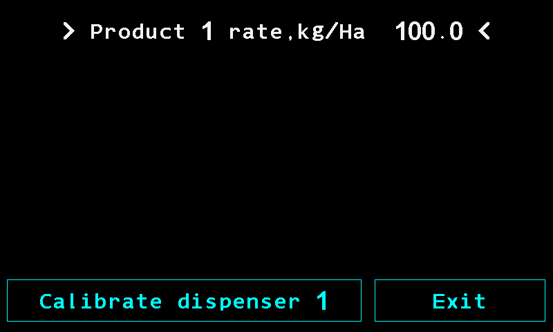
The first screen of the calibration by weight. Tap “Calibrate dispenser N”. If the dispenser cannot be calibrated, a red line stands there instead with the reason: “Not controlled”, “No connection” or “FAILURE”. “Exit” leaves.
The second screen gives the preparation. Weigh the empty container and write the weight down.
Fill the hopper with the product and place the empty container under the dispenser.
Turn the rotor until its cells are filled. This matters more than it looks: a rotor with empty cells gives short measure for the first turns, and that error lands in the stored figure.
Tap “Go to calibration”. “Cancel” returns to the first screen instead. The third screen counts “Impulses” and turns a rotor icon as they arrive.
Empty the container and place it under the dispenser again.
Turn the dispenser rotor and fill the container as far as possible — not less than 2 kg and not more than 60 kg.
Tap “Complete”. The button appears only after more than ten pulses. “Cancel” asks “Are you sure?” before throwing the measurement away.
Weigh the filled container. The number pad asks to “Enter the difference of the filled and empty container in grams”. Type the weight of the product alone — 2000 to 60000 g; the pad offers 10000 — and tap “OK”. The panel stores “Weight, gr” and “Weight, pulses”.
A weight typed outside 2000 … 60000 g is not refused: the panel takes the nearest limit. Weigh carefully and stay inside the range.
Dispenser electric motor
The parameters of an electric metering motor — holes in the disk, gear ratio, direction, jam rollback, product, calibration figures, speed window and calibration button — with ranges, defaults and when each is shown.
An electric motor drives a dispenser at the speed the panel works out from the target rate and the travel speed. Touch and hold its tile on the Motors screen or on the second home screen to open its context menu (Sensor settings).

Which items you see depends on the mode of its group: a motor of a group in the “Precise” mode drives a seed disk; in “Flow” or “Hybrid” it meters a product by weight.
| Parameter | What it does | Range, default | Level |
|---|---|---|---|
| “Holes in disk” | The number of holes in the seed disk. “Precise” mode only. | 1 … 200; 27 | Operator |
| “Numerator” / “Denominator” | Together: the gear ratio between the motor and the dispenser shaft. | 1 … 500 each; 10 / 10 | Agronomist |
| “Rotation direction” | The direction the motor turns. | “Forward” / “Backward”; “Forward” | Agronomist |
| “Start delay,mS” | The shortest time, in milliseconds, between the starts of two motors, so that they do not all start at once. | 0 … 500, steps of 5; 30 | Service |
| “Section control D.I.” | An input of the controller that shuts the section off: “Shut off(0)” when the input reads 0, “Shut off(1)” when it reads 1. | “No” / “Shut off(0)” / “Shut off(1)”; “No” | Agronomist |
| “Rollback when jammed” | “Yes” — when the rotor jams, the motor turns backwards for a moment instead of only stopping. | “No” / “Yes”; “No” | Agronomist |
| “Group start address” | Set at commissioning — see Configure the motor controllers. | — | Agronomist |
In the “Flow” and “Hybrid” modes the menu also holds:
| Parameter | What it does | Range, default | Level |
|---|---|---|---|
| “Dispenser calibration(weight)” | Starts the calibration by weight. Shown only while the machine stands still. Calibrate a metering motor by weight | — | Operator |
| “Type of product” | Which of the four products this motor meters. | “Product 1” … “Product 4” | Agronomist |
| “Weight, gr” / “Rotations” | Both set by the calibration by weight. Number pad. | 1 … 65535 each; 10000 / 100 | Agronomist |
| “Minimum, rpm” / “Maximum, rpm” | The shaft speed window the rate control may use, with one decimal place. Number pad. | 0.1 … 500.0 each; 0.1 / 500.0 | Agronomist |
| “Button input” | The input of the motor controller used as a calibration button; “No” — none. | “No”, 1 … 3; “No” | Agronomist |
| “Activation signal” | Which state of that input counts as pressed. | 0 / 1; 1 | Agronomist |
“Minimum, rpm” and “Maximum, rpm” are not a safety limit but the window the rate control works in. The speed window shown on the calibration screen is worked out from them together with the roller figures. “Button input” and “Activation signal” let one person run the motor from the dispenser during the calibration — see Calibrate a metering motor by weight.
The status screen shows “Working” or “Faulty” and the last fault code (Read the fault code of an electric motor). Alarms: Metering motor alarms, Dosing by weight. The controller itself is set up in Configure the motor controllers.
Calibrate a metering motor by weight
Let the electric motor turn the metering roller into a container and weigh the product, so that the panel knows how much one turn delivers.
This calibration stores how much product one turn of the metering roller delivers — “Weight, gr” and “Rotations” of one motor. Repeat it whenever the product or the roller changes. It is done at the “Operator” level, on a motor whose group is in the “Flow” or “Hybrid” mode.
You need: the machine standing still, a container that holds 1 to 60 kg of the product, and scales.
Touch and hold the tile of the motor on the Motors screen or the second home screen. Tap “Dispenser calibration(weight)”, and tap it again.
The first screen shows the target rates and, under “Product dosage speed limitation:”, the “Min speed, km/h” and “Max speed, km/h” the current settings allow. If it reads “Can not provide dosage!” in red, the roller fitted cannot deliver the rate at any speed — calibration will not repair that; fit another roller. Otherwise tap “Calibrate electric motor N”. “Exit” leaves.
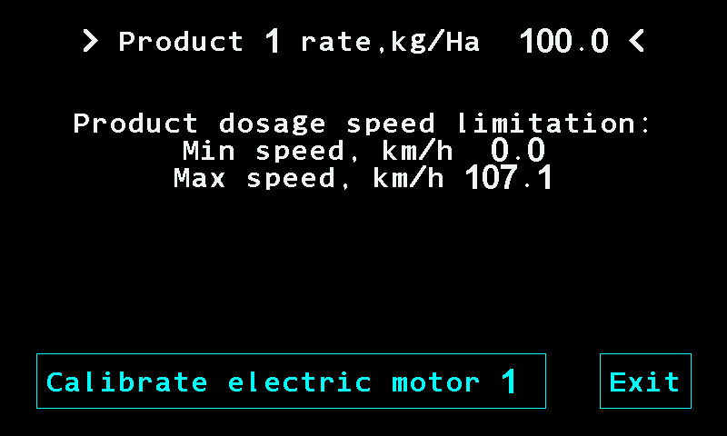
The first screen of the motor calibration. The second screen prepares the rotor. Weigh the empty container and write the weight down. Fill the hopper and place the empty container under the dispenser.
Tap “Fill the rotor cells”. The motor turns the driven shaft two turns and stops by itself. “Stop motor” interrupts it. Repeat until the cells are full.
Tap “Go to calibration”. The third screen shows “Rotations” to one decimal.
Empty the container and place it under the dispenser again.
Tap “Calibration”: the motor runs. Tap “Stop motor” to stop it. Run and stop as often as needed — the counter keeps a running total. Fill the container as far as possible, not less than 1 kg and not more than 60 kg.
Tap “Complete”. It appears once more than one full turn has been made. “Cancel” asks “Are you sure?” before throwing the measurement away.
Weigh the filled container. The number pad asks for the difference of the filled and empty container in grams — 1000 to 60000 g; the pad offers 10000. Type it and tap “OK”. The panel stores “Weight, gr” and “Rotations” for this motor.
During the rotor filling the motor runs at the middle of its “Minimum, rpm” … “Maximum, rpm” window, but not faster than 60 rpm.
Run the motor from a button at the dispenser
If “Button input” of the motor is set to an input (1 … 3) and “Activation signal” matches the button (Dispenser electric motor), a button on that input runs the motor on the third screen: the motor runs while the button is held and stops when it is released. One person can stand at the dispenser with the container instead of walking to the cab between runs. With such a button set up, the motor runs only while the button is held. The screen gives no hint that a button is set up.
When the calibration stops by itself
The calibration ends with a failure if the motor stops answering, if the motor raises an alarm, or if ten seconds pass without pulses from the rotation sensor — then the panel shows “No data from rotation sensor”. A jammed or unplugged rotation sensor ends the run rather than quietly storing zero.
Fan sensor
The parameters of the fan speed sensor — the allowed speed band and the pulses per turn — with ranges and defaults.
The fan sensor watches the speed of the fan of a pneumatic drill or planter. Touch and hold the fan icon on the home screen to open its context menu (Sensor settings).
| Parameter | What it does | Range, default | Level |
|---|---|---|---|
| “Minimum, rpm” | Below it the panel raises “Low speed of rotation”. | 500 … 9000, steps of 500; 3000 | Operator |
| “Maximum, rpm” | Above it the panel raises “High speed of rotation”. | 500 … 9000, steps of 500; 5000 | Operator |
| “Pulses” | How many pulses one turn of the fan gives. | 1 … 60; 2 | Agronomist |
The home screen shows the fan speed in rpm beside the icon; the status screen shows the pulse frequency F= in Hz. Alarms: Fan or dispenser shaft: speed alarms.
Pressure sensor
The parameters of the air pressure sensor — the smoothing filter and the allowed pressure band — with ranges, defaults and when the band is watched.
The pressure sensor measures the positive pressure or the vacuum of the air system. Touch and hold the pressure icon on the home screen to open its context menu (Sensor settings).
| Parameter | What it does | Range, default | Level |
|---|---|---|---|
| “Filter” | How strongly the sensor smooths its reading. | 1 … 16; 1 | Agronomist |
| “Minimum, Pa” | The lower limit of the allowed band. “No” (0) switches the low-pressure check off. | 0 … 10000, steps of 100; “No” | Operator |
| “Maximum, Pa” | The upper limit of the allowed band. “No” (0) switches the high-pressure check off. | 0 … 10000, steps of 100; “No” | Operator |
The band is watched only while the machine seeds, or moves with the implement in work. Both limits apply to the size of the pressure or vacuum, whichever it is. The limits are set in pascals; the home screen and the status screen show the pressure P= in kilopascals (1 kPa = 1000 Pa).
Alarms: Air pressure. Giving a new pressure sensor its address: Configure a pressure sensor.
Marker sensors
The parameters of the marker sensors — which marker a sensor watches and which input state means "lowered".
The marker sensors tell the panel which marker is down. The profile declares “No”, “One” or “Both” (The profile). Touch and hold the marker icon on the home screen to open the context menu of a marker sensor (Sensor settings).
| Parameter | What it does | Values, default | Level |
|---|---|---|---|
| “Connected marker” | Which marker the single sensor watches. Hidden when the profile has both markers. | “Left” / “Right”; “Left” | Agronomist |
| “Signal "down"” | Which state of the input means the marker is lowered. | 0 / 1; 0 | Agronomist |
The status screen of a marker sensor shows only the common lines. On a machine that makes tramlines, the change of the marker position ends a bout — see Set up the tramline rhythm.
Hopper, work position and engine sensors
The settings of the two-state sensors — hopper level, work position of the implement, and the five sensors of the fan-drive engine.
These sensors report one of two states and nothing more. Touch and hold the icon of any of them on the home screen to open its context menu (Sensor settings). Their status screen shows Pin: and the level on the input, "0" or "1".
Hopper sensor
The hopper sensor has no parameters of its own — its context menu holds only the common items.
Alarm: Hopper empty.
Work position sensor
The work position sensor tells the panel whether the implement is lowered for work or raised for transport. The status screen shows “Position: Working” or “Position: Transporting”.
| Parameter | What it does | Values, default | Level |
|---|---|---|---|
| “Transporting position signal” | Which state of the input means the transport position. | 0 / 1; 0 | Agronomist |
| “Alarms criteria” | “Yes” — while the implement is raised, the section alarms are not watched. “No” — the position does not affect the alarms. Hidden, and always “Yes”, on a machine with dispenser motors or a pump. | “No” / “Yes”; “Yes” | Agronomist |
On a machine without markers that makes tramlines, raising the implement ends a bout — see Set up the tramline rhythm.
Engine sensors
“No battery charge”, “Emergency oil pressure”, “Ignition”, “Low fuel” and “Air filter” are five separate inputs, each switched on in the profile on its own (The profile).

| Parameter | What it does | Range, default | Level |
|---|---|---|---|
| “Activation signal” | Which state of the input is the one worth reporting. | 0 / 1; 1 | Agronomist |
| “Signal delay, sec” | How long that state must hold before it counts. | 1 … 30; 15 s for the fuel level, 5 s for the air filter, 1 s for the others | Agronomist |
Oil pressure and battery charge are watched only while the ignition is on; fuel level and air filter always. Alarms: Tractor engine alarms.
Tramline actuator
The two parameters of the tramline actuator, where the rest of its settings live, and what its status screen shows.
The tramline actuator shuts the sections of the tramline bout. It has two parameters of its own, in its context menu — touch and hold its tile on the Motors screen (Sensor settings):
| Parameter | Values | Level |
|---|---|---|
| “Cutoff position” | “Pulled out” / “Pulled in” — the position of the actuator in which its sections are shut off. Default “Pulled out”. | Agronomist |
| “Switch” | “when seeding” / “always” — when the actuator is switched. Default “when seeding”. | Agronomist |
The rest of its settings live elsewhere:
| What | Where |
|---|---|
| The address and the marker channels of its controller | Configure a tramline actuator controller |
| The rhythm — which bout shuts which actuator | Set up the tramline rhythm |
| Which sections belong to the actuator | “Relation of sensors to actuators” — Seeding machine parameters |
The status screen of the actuator shows Status: Pulled in, Pulled out, Working while the shutter is moving, or Unknown. Alarms: Tramline alarms.
Device configuration — before you start
What device configuration is, the preparation it needs, and the three-item pattern every configuration menu follows.
When a system is commissioned, or a sensor is replaced, each new device must be given its address — the number by which the panel finds it on the sensor network. That is done in “Service” → “Sensors Configuration”, one device at a time.
Prepare
Disconnect every sensor from the network connector of the panel.
Connect only the one device that is to be given a new address.
Switch the panel on. Alarms about lost communication appear — close them all with “Close” (How alarms work).
Raise the access level to “Agronomist” — see Enable the Agronomist level.
Tap the home screen with two fingers, then tap “Service” twice and “Sensors Configuration” twice. The menu offers four kinds of device: “Seed sensor”, “Pressure sensor”, “Concentrator-8” and “Tramline actuator”.
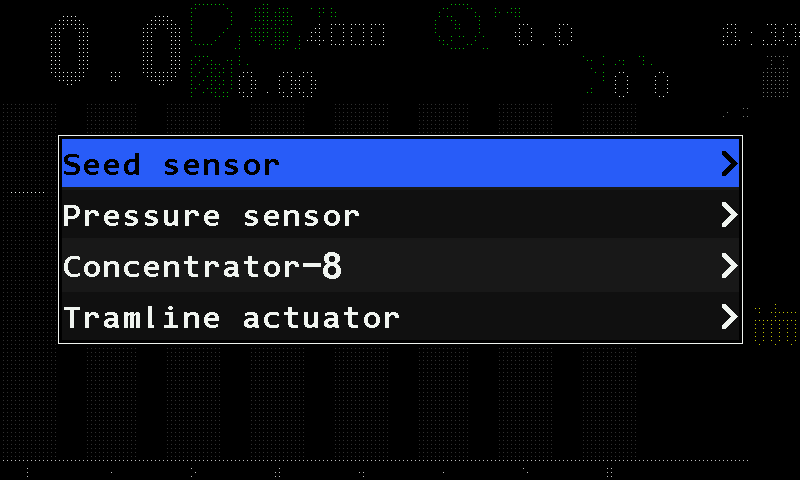
The Sensors Configuration menu.
The pattern
All four menus work the same way:
| Item | What it is |
|---|---|
| “Sensor address” / “Device address” | Which device the menu talks to. Leave it at “AUTO” and the panel talks to the single device that answers. Tapping the selected item again starts a search; each further tap steps to the next device found. |
| “New address” | The address the device is to take. Set it with a swipe right or left. |
| “Set” | Writes it. Tap it, and tap it again. “Done” means the device has accepted it. |
What “Set” can answer:
| Message | Meaning |
|---|---|
| “Done” | The device has taken the new address. |
| “More than one device in network!” | With “AUTO”, more than one device answers. Disconnect all but one. |
| “No connection” | No device answers. Check the cable and the power of the device. |
| “Address: … is used!” | The address you chose belongs to another device already. Choose another. |
Afterwards, every time: disconnect the device and connect it again, return to the home screen and check that it appears where it should. Then set the level back to “Operator” — or switch the panel off and on, which does the same.
The devices
| Device | Topic |
|---|---|
| Seed sensor | Configure a seed sensor |
| Pressure sensor | Configure a pressure sensor |
| HUB8 input device — “Concentrator-8” on the screen | Configure a HUB8 |
| Tramline actuator controller | Configure a tramline actuator controller |
| Electric motor controllers — their own way in | Configure the motor controllers |
Configure a seed sensor
Give a new or replaced seed sensor the number of its row.
For a seed sensor the new address is simply the number of the row — the same number the operator sees under the column on the home screen. Prepare first as in Device configuration: only this sensor on the cable, “Agronomist” level.
Open “Service” → “Sensors Configuration” → “Seed sensor” — tap each item twice. The menu has three items: “Sensor address”, “New address” and “Set”.

The Seed sensor configuration menu. Leave “Sensor address” at “AUTO”.
Tap “New address” and swipe right or left to the row number.
Tap “Set”, and tap it again. The panel answers “Done” and, below it, “Found #” with the number the sensor had until now.
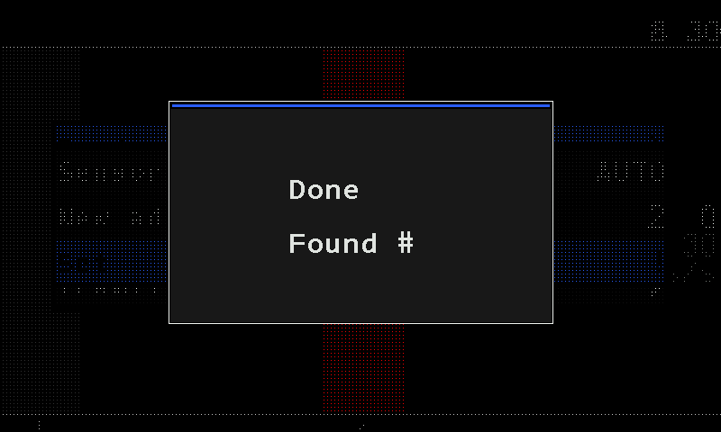
The panel confirms with “Done”. The number after “Found #” is left out of the picture. Disconnect the sensor and connect it again. On the home screen, check that it appears under its row.
If the panel answers “More than one device in network!”, another device is still on the cable. If it answers “No connection”, the sensor does not answer — check its cable and power.
When all sensors are done, set the level back to “Operator”, or switch the panel off and on. The parameters of the seed sensors: Seed sensors and dry fertilizer sensors.
Configure a pressure sensor
Give a new or replaced air pressure sensor its address.
Prepare first as in Device configuration: only this sensor on the cable, “Agronomist” level. The menu has the same three items as every configuration menu. The address values are not printed in this manual: take them from the data sheet of the system.
Open “Service” → “Sensors Configuration” → “Pressure sensor” — tap each item twice. The menu shows “Sensor address”, “New address” and “Set”.
Leave “Sensor address” at “AUTO”.
Tap “New address”. The panel proposes the value for the first pressure sensor by itself; each further sensor takes the next one. Check the value against the data sheet and correct it with a swipe right or left if needed.
Tap “Set”, and tap it again. The panel answers “Done”.
Disconnect the sensor and connect it again. On the home screen, check that its indicator appears.
When all sensors are done, set the level back to “Operator”, or switch the panel off and on. Its parameters: Pressure sensor.
Configure a HUB8
Tell a HUB8 input device — "Concentrator-8" on the screen — what is wired to each of its eight channels.
The HUB8 carries several devices at once. On the panel it is called “Concentrator-8”. Its menu is longer than the others: after the device address come its eight channels, each with a type and a number. Prepare first as in Device configuration: only this HUB8 on the cable, “Agronomist” level.
| Item | What it is |
|---|---|
| “Device address” | Which HUB8 the menu talks to. Leave it at “AUTO”. |
| “Channel 1 type” … “Channel 8 type” | What is wired to the channel: “Seed sensors” or “Input device”. |
| “Channel 1 address” … “Channel 8 address” | Which device of that kind it is: for a seed sensor, the number of its row; for an input device, the value from the data sheet of the system. |
| “Set” | Writes all channels to the HUB8. |
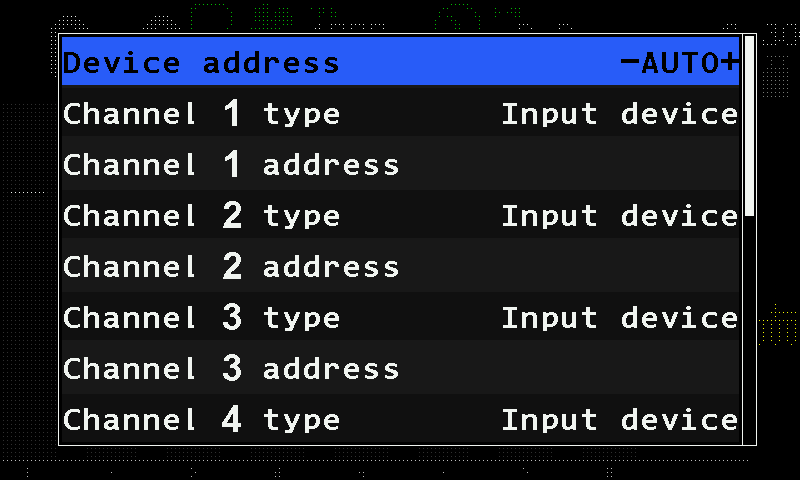
The type and the number together make the device appear on the home screen in the right place.
Open “Service” → “Sensors Configuration” → “Concentrator-8” — tap each item twice.
Leave “Device address” at “AUTO”.
For each channel that carries a device, tap its type item — “Channel 1 type” for channel 1 — and swipe to the type, then tap its address item — “Channel 1 address” — and swipe to the number. Leave a channel that carries nothing as it is.
Swipe up to “Set” at the end of the menu, tap it, and tap it again. The panel answers “Done”.
Disconnect the HUB8 and connect it again. On the home screen, check that each device appears in its place.
Two channels of the same type cannot have the same number: “Set” then refuses with “Invalid profile!” and writes nothing.
When all devices are done, set the level back to “Operator”, or switch the panel off and on.
Configure a tramline actuator controller
Tell an actuator controller which tramline actuator it drives and which marker sensors are wired to it.
The actuator controller carries three things at once — the tramline actuator and the two marker sensors of the bout — and each has its own line. That is why one controller serves an actuator and both markers. Prepare first as in Device configuration: only this controller on the cable, “Agronomist” level.
| Item | What it is |
|---|---|
| “Device address” | Which controller the menu talks to. Leave it at “AUTO”. |
| “Actuator” | The number of the tramline actuator this controller drives, or “No” if it drives none. |
| “Input device, channel 1” | The first marker sensor, or “No”. |
| “Input device, channel 2” | The second marker sensor, or “No”. |
| “Set” | Writes the three lines to the controller. |

Open “Service” → “Sensors Configuration” → “Tramline actuator” — tap each item twice.
Leave “Device address” at “AUTO”.
Set “Actuator”, “Input device, channel 1” and “Input device, channel 2”: tap each line and swipe right or left to its value.
Tap “Set”, and tap it again. The panel answers “Done”.
Disconnect the controller and connect it again. On the home screen, check that the actuator and the markers appear.
“Set” refuses with “Invalid profile!”, and writes nothing, when all three lines are at “No”, or when both marker channels carry the same number.
When all devices are done, set the level back to “Operator”, or switch the panel off and on. The actuator's own settings: Tramline actuator; the markers: Marker sensors.
Configure the motor controllers
Give a metering motor controller its address, choose the kind of controller, and set its parameters.
The controllers that drive the metering motors are not addressed from “Sensors Configuration”. They have their own way in, their own choice of controller kind and their own parameters.
Open the motor controller menu
Raise the level to “Agronomist” (Enable the Agronomist level).
Tap the home screen with two fingers, tap “Service” twice, then “Electric motors” twice. The diagnostic screen of the controllers opens on motor 1. The same screen opens from “Electric motors” in the context menu of a motor.

The Electric motors screen of motor 1, page “Registers”. Tap the screen with two fingers. Two items appear: “Change address” and “Configuration”.

The menu of the Electric motors screen.
Change the address
Tap “Change address”, and tap it again. Three items open.
“Motor address” — the address the controller answers on now. Leave it as found.
“New address” — the address it is to take. Take it from the data sheet of the system; the values are not printed in this manual.
Tap “Set”, and tap it again, to write it.
Choose the controller kind
“Configuration” opens the choice of controller kind, offered by number. The panel reads the kind back from the controller and opens on the one that answers. Choosing another kind by hand is how a replacement board is set up — not a way to change what a motor is.
| Kind | What it is |
|---|---|
| “1)universal” | The universal controller: two DC channels or one stepper channel on the same board. |
| “2)DC motor” | A DC motor controller. |
| “3)STEPPER fw0.006+” | A stepper controller, firmware 0.006 and later. |
| “4)BGxxCI” | A BG45CI motor with the controller built in, on the older board. |
If the controller that answers does not suit the menu, the panel says so: “Wrong controller type!”, “Old firmware version!” or “Wrong controller work mode!”.
Set the parameters
Every configuration menu ends with “Set”, and “Set” carries a value of its own — the address group: “Motor address” (this controller only), “ALL”, “All-Seeding” or “All-Fertilizer”. Nothing reaches the controller until “Set” is entered — the items above it change the numbers the panel holds, not those the controller runs on. “Set” answers “Done”, “FAILURE” or “No connection”; a group that has no motors in the profile is answered with “EM of dispensers is missing in profile”.
| Kind | What it is given |
|---|---|
| STEPPER | “Pulses” 1 … 8192 — the pulses of one turn of the motor shaft; “Motor type” from a list; “Set”. |
| BGxxCI | “Pulses” 1 … 8192; “Set”. Nothing else — the controller carries the rest. |
| DC motor | “Pulses”, “Motor type”, the regulator terms “PID kP”, “PID kI”, “PID kD” (0 … 65535, read as hundredths), “TURBINA” 0/1, and two speed–time pairs “TIME1” / “SPEED1”, “TIME2” / “SPEED2”; “Set”. |
| universal | The largest set, in three menus: “Work mode”, “Inputs setup” and “Parameters”. |
The “Parameters” menu of the universal controller:
| Parameter | Range |
|---|---|
| “Motor type” | 0 … 255, from the controller's own table |
| “Pulses” | 1 … 8192 per shaft turn |
| “Acceleration,Ms” / “Deceleration,Ms” | 50 … 65535 — the ramp up and down |
| “Minimum, rpm” / “Maximum, rpm” | 0 … 65535 — the shaft speed window |
| “PID kP”, “PID kI”, “PID kD” | 0 … 65535, hundredths |
| “!! Temp,*C” | 0 … 200 — the temperature at which the controller alarms |
| “I_peak,A” / “I_peak,mS” | the peak current, in tenths of an ampere, and how long it may be drawn |
| “I_push,A” / “I_push,Sec” | the breakaway current and its time |
| “I_hilo,A” / “I_hilo,Sec” | the sustained-current threshold and its time |
| “Set” | writes all of it, at the chosen address group |
The four kind names and the items “PID kP”, “PID kI”, “PID kD”, “TURBINA”, “TIME1”, “SPEED1”, “TIME2”, “SPEED2”, “!! Temp,*C”, “I_peak,A”, “I_push,A”, “I_hilo,A” and their time partners read the same in every language of the panel.
Reading what the controller reports: Motor controller diagnostics.
Motor controller diagnostics
How to read what a metering motor controller reports about itself on the Electric motors screen — speed, error code, voltages, temperature, current, status bits and fault counters — and how to move through it by touch.
The Electric motors screen shows, live, what a motor controller reports about itself. Open it with a two-finger tap on the home screen → “Service” → “Electric motors”, or with “Electric motors” in the context menu of a motor — both at the “Agronomist” level. The working view of the motors is a different screen: Motors screen.
- “Mode” — tap it to switch the page: “Registers”, then “Statistics”.
- “Motor #” with a number — which controller is shown (the number is left out of the picture). Swipe right for the next number, left for the previous one.
- “Registers” — the name of the page. A universal controller has two register pages, “Registers-1” and “Registers-2”.
- The status word — sixteen bits of the controller; a lit (yellow) cell is a bit that is set.
- The legend of the bits — the number and the name of each bit. Table below.
- “Speed” / “Target speed” — what the shaft is doing against what the panel asked for. A gap that does not close is the first sign of a load the motor cannot carry.
- “Error code” / “Act.posit.” — the controller's own error number (codes), and the position it counts itself at.
- “Volt.mot.,mV” / “Volt.elec.,mV” — the voltage at the motor and at the electronics, in millivolts. A motor voltage far below the electronics voltage means the supply sags under load.
- “Temperat.,C” / “Current,mA” — the controller's temperature and the current it draws. Compare the current with “I_hilo,A” set for this motor (Configure the motor controllers).
| Gesture | What it does |
|---|---|
| Tap “Mode” | Next page. |
| Swipe right / left | Next / previous controller number. The numbers run from 1 to 127 and go round; a number without a controller shows nothing useful. |
| Two-finger tap | The menu: “Change address”, “Configuration” — see Configure the motor controllers. |
| Three-finger tap, or long swipe up | Close the screen. |
The status bits
| Bit | Name | Bit | Name |
|---|---|---|---|
| 0 | Enable | 8 | Toggle |
| 1 | Error | 9 | CmdTgl |
| 2 | Warn. | 10 | CmdErr |
| 3 | Moving | 11 | StpHalt |
| 4 | Reach | 12 | LimCur |
| 5 | Limit | 13 | LimVel |
| 6 | FolErr | 14 | LimPos |
| 7 | HomDone | 15 | LimSVel |
The legend is drawn in English on every panel, whatever its language: it is a bit map of the controller, not a message to the operator.
The fault counters

The “Statistics” page shows the faults this motor has collected on the active field — they are part of the field statistics, not of the motor:
| Counter | What it counts |
|---|---|
| “Jammed” | The rotor stalled and the controller had to give up or back off. |
| “Disconnects” | The controller stopped answering. |
| “Other” | Everything else the controller reported. |
| “In failure” | The distance in metres this motor spent in a fault state. |
Each counter is white at zero and red once it is not. A red figure does not mean the motor is faulty now — it means it was, somewhere on this field, and the seed placed there is worth a look. To read another field, make it the active field first (Statistics screen).
How alarms work
When the Hectare 5 raises an alarm, what the alarm window shows, how it is closed by touch, which faults sound without a window, and how to use the alarm topics of this manual.
An alarm is a window that opens over the working screen, with the alarm sound. It tells you that one device — a sensor, an actuator, a motor controller — or the system as a whole has found a fault. The alarm topics in this section are grouped by the device that raises the alarm. Look for the words you see on the screen, not for a description of them.
When the panel raises an alarm
A fault is not reported the moment it appears. The condition must hold without a break for the time set in “Alarm delay” before the alarm window opens.
| Setting | Value |
|---|---|
| Where it is set | “Settings” menu, item “Alarm delay”, at the “Operator” level. See The Settings menu. |
| Range | 2 to 20 seconds, in steps of 1 second. |
| Default | 3 seconds. A value outside the range is reset to the default by itself. |
A short delay makes the panel react quickly, but also to brief disturbances — a single bump, a momentary gap in the seed flow. A long delay keeps the screen quiet, but a real fault can run for up to twenty seconds before you are told.
Two cases do not follow the delay:
- Lost communication is counted in polls, not in seconds. “Connection lost” appears after three polls in a row without an answer from the device.
- Right after a sensor has been set up, its alarms are not processed for a short blocking period. This prevents a burst of alarms while a device is being configured.
The alarm window
- “FAILURE!” — the title of every alarm window, on a red bar, whatever the fault. It is not the fault itself.
- The alarm text — the fault. Look it up under this text in the alarm topics.
- The kind of device that raises the alarm — here a hopper sensor. The same text can come from different devices; this line tells you which.
- The number of the device — here hopper 2. When several devices of the same kind raise the same alarm, they share one window and are listed together, for example #3-5,8.
- “Close” — closes this alarm. Below.
An over-current alarm of a motor adds a line with the current the controller measured, in amperes. The alarms of the panel itself — for example “User is Agronomist!” — have no device line; their text starts with the line “HOME - close message”. They are closed like every other alarm, with “Close”.
Closing an alarm
Tap “Close” in the window. This alarm closes and the sound stops. If more alarms are waiting, the next one opens. Nothing else closes an alarm window — taps elsewhere, swipes and the three-finger tap are ignored while it is open.
Closing a window does not repair the fault. The alarms of a device that are still active are counted on its status screen — see The sensor status screen.
Alarms are hidden at the higher access levels
At the “Agronomist” and “Service” levels no alarm windows are shown — apart from the one warning that says so, User is Agronomist — and the faults without a window stay silent too. The alarms are not lost: they wait. When you return to “Operator”, the panel drops the ones that have gone away and shows the ones that are still true, one after another. See Access levels.
Alarms without a window
Two faults are not shown as a window, because you have to see the working screen while you correct them. At the “Operator” level the alarm sound plays while they last, as long as no alarm window is open:
- “SLOWER” or “FASTER” — the travel speed is outside the limits set for the speed sensor. The speed field shows the word. See Indicators.
- “NOT UNDER CONTROL” — rows run under the control line of their diagram. See The section diagram.
How the alarm topics are written
Every alarm has its own heading with the text exactly as on the screen; where the message has two lines on the panel, both lines are given. Under it: what the panel has detected, and what to check, in the order a mechanic checks it — the quick checks on the panel first, then the machine, then the device itself.
Any device: connection lost or wrong device type
The two alarms any sensor, actuator, controller or input device can raise — no answer from the device, or the wrong kind of device answering.
These two alarms are not tied to one kind of device. The name of the device in the alarm window tells you which one is affected. How the window works: How alarms work.
“Connection lost”
What it means. The panel has received no answer from the device in three polls in a row. This applies to sensors, actuators, controllers and input devices alike.
What to check, in this order:
- The device is connected to the network.
- The cable and the connector of the device.
- The power supply of the device. It must meet the values in the device passport.
- The device is meant to be there: a device in the profile that is not fitted raises this alarm too. Leave such a device out of control (Take a sensor into or out of control).
“Wrong device type!”
What it means. A device of another kind answers where the panel expects a device of this kind. The cause is either a wrong setting in the system profile or a wrong configuration of the device itself.
What to do: call the service support. Do not try to correct it by changing the profile or the device configuration at random — see Device configuration.
Fan or dispenser shaft: speed alarms
What to do when the fan or the dispenser shaft turns too slowly, too fast, or not at all.
The fan sensor and the dispenser shaft sensor use the same two messages. The device name in the alarm window tells you which one it is. How the window works: How alarms work.
“Low speed of rotation” / “High speed of rotation”
What it means. The fan or the dispenser shaft turns slower or faster than allowed. For the fan the limits are “Minimum, rpm” and “Maximum, rpm”; for the dispenser shaft the panel compares it with the speed the travel speed asks for, within “Maximum error, %”.
What to check, in this order:
- The component being watched — the fan or the dispenser and its drive.
- The settings of the sensor: for the fan “Minimum, rpm”, “Maximum, rpm” and “Pulses” — see Fan sensor; for the dispenser — see Dispenser shaft sensor.
- Dispenser only: the travel speed on the panel matches the real speed.
- The sensor itself is serviceable.
- Dispenser only: run the calibration — see Calibrate the dispenser rotation.
“No rotation”
What it means. The dispenser shaft does not turn while the machine seeds or moves. Only the dispenser shaft sensor raises this alarm. The shaft counts as stopped when no pulse has come for “Period, s”.
What to check, in this order:
- The dispenser and its drive.
- The settings of the sensor, above all “Period, s” — see Dispenser shaft sensor.
- The sensor itself is serviceable.
Hopper empty
What to do when the panel reports that a hopper is running empty.
The hopper sensor sits in the hopper at a fixed height. It reports when the product falls below it. On the home screen the hopper icon turns from full green to empty red. How the window works: How alarms work.
“Hopper empty”
What it means. The level of the product in the hopper is very low. The hopper needs refilling.
What to check, in this order:
- Fill the hopper.
- If the product stands above the height at which the sensor is mounted and the alarm stays, check that the sensor is serviceable. Its status screen shows the level on its input as "0" or "1" — see The sensor status screen.
The hopper sensor has no settings of its own beyond the common ones — see Hopper, work position and engine sensors.
Air pressure too high or too low
What to do when the pressure sensor of the air system reports a pressure or vacuum outside the allowed range.
The pressure sensor measures the positive pressure or the vacuum of the air system. Both alarms look at the size of the pressure or vacuum, whichever it is, and only while the machine seeds or moves with the implement in work. The limits are described in Pressure sensor. How the window works: How alarms work.
“High pressure”
What it means. The measured pressure or vacuum is greater than “Maximum, Pa”.
What to check, in this order:
- Reduce the speed of the fan or turbine.
- The position of the regulating damper of the air intake, if there is one.
- The tube to the pressure sensor is connected correctly, and the measuring line is free of blockages.
“Low pressure”
What it means. The measured pressure or vacuum is less than “Minimum, Pa”.
What to check, in this order:
- Increase the speed of the fan or turbine.
- The position of the regulating damper of the air intake, if there is one.
- The air duct for leaks.
- The tube to the pressure sensor is connected correctly, and the measuring line is free of blockages.
Application rate too low or too high
What to do when the seed, dry fertilizer or liquid fertilizer sensors report a rate below or above the allowed band, and what NOT UNDER CONTROL means.
The section sensors — seed, dry fertilizer and liquid fertilizer — compare the rate they measure with the target. How the window works: How alarms work.
| Mode of the group | “Under allowable rate” | “Over allowable rate” |
|---|---|---|
| “Flow” | The flow falls below the alarm level — the control line of the diagram. | Not raised. |
| “Hybrid”, “Precise” | The rate falls below the target by more than “Rate error,%”. | The rate rises above the target by more than “Rate error,%”. |
“Under allowable rate”
What it means. A section sensor — seed, dry fertilizer or liquid fertilizer — has measured too little product during work.
What to check, in this order:
- There is enough product in the hoppers or in the tank.
- The travel speed on the panel matches the real speed.
- Seed or dry fertilizer sensor: “Fraction”. The value may have to be reduced. See Seed sensors and dry fertilizer sensors.
- Liquid fertilizer sensor: “Pulses per liter”. The value may have to be reduced. See Liquid fertilizer.
- Seed sensor: its status on the status screen (“Information” in its context menu) — see The sensor status screen.
- The metering unit: is it serviceable, and is it adjusted correctly?
“Over allowable rate”
What it means. A section sensor — seed, dry fertilizer or liquid fertilizer — has measured too much product during work.
What to check, in this order:
- The travel speed on the panel matches the real speed.
- Seed or dry fertilizer sensor: “Fraction”. The value may have to be increased.
- Liquid fertilizer sensor: “Pulses per liter”. The value may have to be increased.
- Seed sensor: its status on the status screen.
- The metering unit: is it serviceable, and is it adjusted correctly?
“NOT UNDER CONTROL” — no window
When rows run under the control line, the home screen shows “NOT UNDER CONTROL” in red and, at the “Operator” level, the alarm sound plays — but no alarm window opens. The rows under the line are not guarded.
What to check, in this order:
- The travel speed on the panel matches the real speed.
- The alarm level of the diagram: is it above the rate the machine really applies? Lower it, or let the panel set it — Set the alarm level.
- There is enough product in the hoppers or in the tank.
- “Fraction” of the seed or fertilizer sensors, or “Pulses per liter” of the liquid sensors — the value may have to be reduced.
- The metering unit: is it serviceable, and is it adjusted correctly?
What the line means: The section diagram.
Too many doubles or skips
What to do when a seed sensor of a precision planter counts more doubles or skips than allowed.
Doubles and skips are counted only in the “Precise” mode of seeding — on a precision planter. Each alarm is raised only if its limit is set: “Doubles error,%” and “Skips error,%” at “No” switch it off. How the window works: How alarms work.
“High % of doubles”
What it means. The share of doubles the sensor counts is higher than “Doubles error,%”.
What to check, in this order:
- The travel speed on the panel matches the real speed.
- “Doubles error,%” in the settings of the seed sensors — is the limit sensible? See Seed sensors and dry fertilizer sensors.
- “Fraction” in the settings of the seed sensors. The value may have to be increased.
- The sensor's status on its status screen — see The sensor status screen.
- The metering unit: is it serviceable, and is it adjusted correctly?
“High % of skips”
What it means. The share of skips the sensor counts is higher than “Skips error,%”.
What to check, in this order:
- The travel speed on the panel matches the real speed.
- There is enough seed in the hoppers.
- “Skips error,%” in the settings of the seed sensors — is the limit sensible?
- “Fraction” in the settings of the seed sensors. The value may have to be reduced.
- The sensor's status on its status screen.
- The metering unit: is it serviceable, and is it adjusted correctly?
The stretch over which the shares are counted is “Recalculation,m” of the seed sensors. How the skips and doubles look on the diagram: The section diagram.
Tramline: actuator stalled or product in the tramline
What to do when the tramline actuator jams, its position sensors contradict each other, or a shut-off section still delivers product.
The tramline actuator shuts the sections of the tramline bout. Two gate position sensors tell the panel where its shutter stands. How the window works: How alarms work.
“Stall”
What it means. The tramline actuator has jammed.
What to check, in this order:
- The gate position sensors of the actuator are serviceable.
- The mechanism of the tramline actuator is serviceable.
“Illegal state”
What it means. The actuator reports a position that cannot be: both gate position sensors have triggered at the same time. With a serviceable installation this cannot happen.
What to check: the gate position sensors are serviceable.
“Seeding to tramline”
What it means. A section that should be shut off for the tramline still delivers too much product. The seed sensor, the dry fertilizer sensor or the liquid fertilizer sensor of that section has measured it in the tramline control mode.
Seed sensor or dry fertilizer sensor — check, in this order:
- The metering unit and the flow cut-off mechanism are serviceable.
- “Toler.sowing to tramline,%” in the settings of the group of section sensors. The value may have to be increased. See Seed sensors and dry fertilizer sensors.
- “Fraction” in the settings of the group of the alarming sensor. The value may have to be increased.
- The sensor's status on its status screen — see The sensor status screen.
Liquid fertilizer sensor — check, in this order:
- The metering unit and the flow cut-off mechanism are serviceable.
- “Tolerable leak to tramline,%” in the settings of the group of section sensors. The value may have to be increased. See Liquid fertilizer.
A sensor whose “Product application” is set to “No” is watched the same way — as a shut-off row.
Seed or fertilizer sensor clogged, light-struck or broken
What to do when an optical seed or fertilizer sensor reports a blocked channel, too much light, a fault of its own, or outdated firmware.
The seed and dry fertilizer sensors count the product optically: an emitter shines across the channel, a receiver sees each grain. These alarms report the state of the sensor itself, not the rate. How the window works: How alarms work.
“Clogged”
What it means. The seed or dry fertilizer sensor has detected that its optical channel is blocked.
What to do, in this order:
- Remove the blockage.
- Check for a build-up of dust in the channel.
- Check the power supply of the sensor. It must meet the values in the device passport.
“Light struck”
What it means. The seed or fertilizer sensor has detected an extremely high level of light in its optical channel.
What to do: keep direct sunlight out of the optical channel of the sensor.
“Broken”
What it means. The seed or dry fertilizer sensor has detected a fault of its own. It may have to be replaced. Its status screen shows “Faulty”.
What to do: check the power supply of the sensor. It must meet the values in the device passport. If the power supply is in order, the sensor may have to be replaced — call the service support.
“Old firmware! Wrong S&D calc!”
What it means. A dry fertilizer sensor with outdated firmware is in use while the fertilizers are in the “Precise” mode. It counts, but its skips and doubles cannot be trusted.
What to do: call the service support to have the firmware of the sensor updated — or set “Mode of fertilizers” to “Flow” or “Hybrid” (Seeding machine parameters).
Engine: oil pressure, battery charge, fuel, air filter
What to do when one of the engine sensors — oil pressure, battery charge, fuel level, air filter — raises an alarm.
All engine sensors share one alarm text: “FAILURE”. The name of the sensor under the text tells you which one has triggered. Oil pressure and battery charge are watched only while the ignition is on; fuel level and air filter always. How the window works: How alarms work. The settings named below are described in Hopper, work position and engine sensors.
“FAILURE” — “Emergency oil pressure”
What it means. The low oil pressure sensor has triggered.
What to check, in this order:
- The low oil pressure sensor is serviceable.
- “Activation signal” in the settings of the low oil pressure sensor.
- If an ignition sensor is in the profile: is its control switched on?
- If an ignition sensor is in the profile: is it serviceable?
“FAILURE” — “No battery charge”
What it means. The battery is not being charged.
What to check, in this order:
- The battery charge sensor is serviceable.
- “Activation signal” in the settings of the battery charge sensor.
- If an ignition sensor is in the profile: is its control switched on?
- If an ignition sensor is in the profile: is it serviceable?
“FAILURE” — “Low fuel”
What it means. Little fuel is left in the tank.
What to check, in this order:
- The fuel level sensor is serviceable.
- “Activation signal” in the settings of the fuel level sensor.
- “Signal delay, sec” in the settings of the fuel level sensor. The default is 15 seconds.
“FAILURE” — “Air filter”
What it means. The air filter is clogged.
What to check, in this order:
- The air filter sensor is serviceable.
- “Activation signal” in the settings of the air filter sensor.
- “Signal delay, sec” in the settings of the air filter sensor. The default is 5 seconds.
The ignition sensor itself never raises an alarm window: a yellow key on the home screen only says the ignition is off (Indicators).
Product rate by weight too low, too high, or impossible
What to do when a product dosed by weight — by an electric motor or a weight-controlled dispenser — misses its target rate, or cannot reach it at all.
These alarms are raised by the system as a whole, not by one device. They exist for each of the four products separately: the number in the message is the number of the product. How far a product may stand from its target is “Product rate error,%” in the “Settings” menu (The Settings menu). How the window works: How alarms work.
“Rate of Product 1” / “is to low!” — or — “is to high!”
The same for Product 2, 3 and 4. The panel writes the message in this spelling.
What it means. The product is applied below or above its target rate in kilograms per hectare by more than “Product rate error,%”.
Product metered by an electric motor — check, in this order:
- The target rate of the product.
- The speed limits in force, on the status screen of the speed sensor — see The sensor status screen.
- The settings of the electric motor that drives the dispenser shaft — see Dispenser electric motor.
- The metering unit.
- The rotation sensor of the electric motor is serviceable.
- The working load of the motor. Below 20 % or above 80 %, try a metering roller of another size: a larger one if too little is applied, a smaller one if too much.
- Calibrate the metering roller — see Calibrate a metering motor by weight.
Dispenser sensor with “Weight control” switched on — check, in this order:
- The target rate of the product.
- The settings of the dispenser shaft sensor — see Dispenser shaft sensor.
- The metering unit.
- The dispenser sensor is serviceable.
- Calibrate the dispenser — see Calibrate the dispenser by weight.
“Product dosage is” / “impossible! Check product” / “rate and calibration!”
What it means. With the current settings and target rate, the product cannot be applied by weight at all: the lowest speed at which the metering rollers can deliver the rate is already at or above the highest. On the home screen a red product icon blinks in the right-hand column.
What to check, in this order:
- The target rates of the products — one product asking too much closes the window for all of them.
- “Min speed, km/h” and “Max speed, km/h” of the speed sensor — see Travel speed sensor.
- The settings of the electric motors that apply the products by weight, above all “Minimum, rpm” and “Maximum, rpm”.
- Calibrate the metering rollers of the electric motors.
- If that does not help: fit metering rollers of another size.
User is Agronomist: alarms will not be shown
Why the panel warns that alarms are hidden, and how to get them back by touch.
How the window works: How alarms work.
“User is Agronomist!” / “Alarms will not be shown!”
What it means. Seeding has started while the “Agronomist” or “Service” access level is set. At these levels the panel does not show alarm windows; this warning is the only exception. It appears once for the whole time you work at that level. Like every alarm of the panel itself, its text starts with the line “HOME - close message”; close it with “Close”.
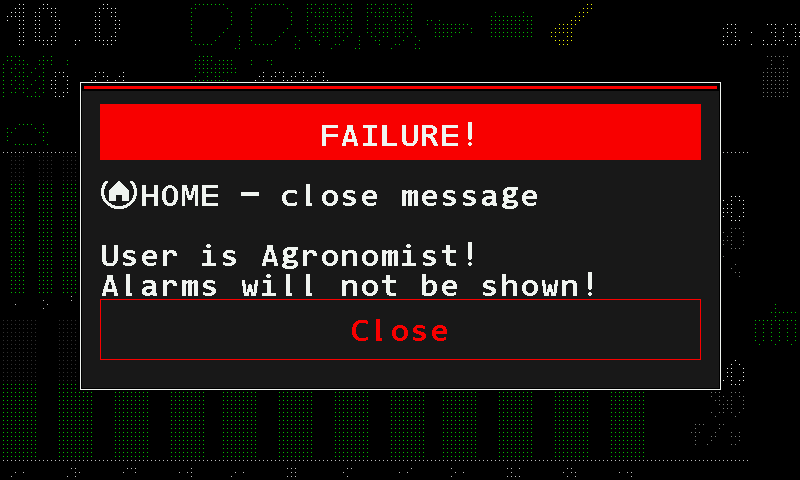
What to do: set the access level back to “Operator”:
Tap “Close” in the warning.
Tap the home screen with two fingers, then tap “Settings” twice.
Swipe up to “User” and tap it. Swipe left until it reads “Operator”.
Tap “User” again. Going down a level needs no PIN.
Switching the panel off and on does the same: after every power-on the panel starts at “Operator”.
Travel speed sensor failed, speed limits contradict, or poor GPS signal
What to do when one of two speed sensors stops giving pulses, when the minimum and maximum travel speed are set the wrong way round, or when the built-in receiver sees too few satellites.
How the window works: How alarms work.
“Speed sensor #1 failed” / “Speed sensor #2 failed”
What it means. The profile says the machine has two travel speed sensors, but the panel sees movement from only one of them. The number names the silent sensor. This alarm cannot appear on a machine with one speed sensor.
What to do, in this order:
- Check that both speed sensors are serviceable, and repair what you find.
- If one sensor cannot be repaired now: change the system profile so that only one speed sensor is used — see The profile.
“Error in settings of Min/Max”
What it means. The minimum and the maximum travel speed set for the speed sensor contradict each other. The panel cannot decide whether the current speed is allowed.
What to do: check “Min speed, km/h” and “Max speed, km/h” in the settings of the speed sensor. The minimum must be below the maximum. See Travel speed sensor.
“Poor GPS signal quality”
What it means. The speed is taken from the receiver built into the panel (“GPS internal” is “Yes”), and it sees fewer than four satellites. The speed it gives cannot be trusted. The satellite symbol on the home screen is red.
What to do, in this order:
- Give the panel a clear view of the sky; move off from under trees, buildings or a shed roof.
- Watch the number beside the satellite symbol: it shows how many satellites the receiver uses. Wait until it reaches four or more.
- If the reception stays poor, take the speed from the wheel sensor: set “GPS internal” to “No” — see GPS and Travel speed sensor.
Metering motor: jammed, electrical faults, bootloader
What to do when the controller of a dispenser electric motor reports a jam, a short circuit, over-current, a wrong supply voltage, overheating, an unknown fault or a stuck firmware update.
These alarms come from the controller that drives an electric motor of a dispenser. The name in the alarm window tells you which motor; the Motors screen shows which tile is in trouble (Motors screen). How the window works: How alarms work.
“Motor jammed!”
What it means. The controller does not see rotation while the motor should be running.
What to check, in this order:
- The metering unit is serviceable and turns freely.
- The rotation sensor of the motor is serviceable, and so is its connection to the controller — the cable and the connector.
If jams are frequent, “Rollback when jammed” lets the motor back off and try again — see Dispenser electric motor.
“Short circuit”
What it means. The controller has detected a short circuit.
What to check, in this order:
- The cable connection: the cables and the connector are intact.
- Replace the controller with a serviceable one to test it.
“Over current”
What it means. The current has gone above the limit. The window adds a line with the current the controller measured, in amperes.
What to check, in this order:
- The motor and the seeding mechanism for jamming.
- The cable connection: the cables and the connector are intact.
- Replace the controller with a serviceable one to test it.
“Under voltage”
What it means. The supply voltage of the motor is below the allowed value. The motor cannot run.
Measure the supply voltage first.
If it is too low:
- The alternator is serviceable.
- The tension of the alternator belts.
- The power harness is connected firmly to the battery or the alternator terminals, as the required supply voltage demands.
- The cable connections make reliable electrical contact.
If the supply voltage is in order: replace the controller with a serviceable one to test it.
“Over voltage”
What it means. The supply voltage of the motor is above the allowed value. The motor cannot run.
Measure the supply voltage first.
If it is too high:
- The alternator is serviceable.
- The power harness is connected firmly to the battery or the alternator terminals, as the required supply voltage demands.
- The cable connections make reliable electrical contact.
If the supply voltage is in order: replace the controller with a serviceable one to test it.
“Over temperature”
What it means. The motor controller has overheated.
What to do, in this order:
- Let the motor cool down.
- Replace the controller with a serviceable one to test it.
“FAILURE”
What it means. The controller has detected an unusual fault that needs the service support.
What to do, in this order:
- Read the fault code: touch and hold the motor tile → “Information” → line “Last fault:”. See Read the fault code of an electric motor.
- Replace the controller with a serviceable one to test it.
- Give the code and the number of the motor to the service support.
“Device in bootloader!”
What it means. The controller has stayed in its firmware update mode and is not running its working program. It cannot drive the motor.
What to do, in this order:
- Switch the power off and on.
- If the message returns, the firmware update of the controller was not completed. Call the service support.
Liquid fertilizer pump: pressure and rate alarms
What to do when the liquid fertilizer pump controller reports too much pressure, a failed pressure sensor, or a rate it cannot hold.
The pump controller is built on the same electronics as the controller of a metering motor. Besides the alarms on this page it raises the electrical alarms of the metering motor controller — “Short circuit”, “Over current”, “Under voltage”, “Over voltage”, “Over temperature”, “FAILURE” and “Device in bootloader!” — with the same meaning and the same actions: see Metering motor alarms. How the window works: How alarms work.
“High pressure”
What it means. The measured liquid pressure has reached “Max pressure, Bar”.
What to do, in this order:
- Reduce the travel speed.
- In the settings of the pump controller, check “Max pressure, Bar” and, if the line allows it, increase it — see Liquid fertilizer.
“Pressure sensor failure!”
What it means. The signal from the pressure sensor has fallen well below its 4–20 mA working range.
What to check, in this order:
- The connection of the sensor to the controller — the cable and the connector are intact.
- “Pressure sensor” in the settings of the pump controller names the input the sensor is really wired to.
- The sensor is serviceable. If it has failed, replace it.
The status screen of the pump controller shows the pressure and the raw sensor signal in mA — see The sensor status screen.
“Rate low”
What it means. The pump controller cannot reach the set rate: the actual rate is below the target by more than “Product rate error,%”.
What to check, in this order:
- The travel speed on the panel matches the real speed and is reasonably steady.
- The working load of the pump. Above 90 %: drive more slowly.
- Load under 90 %, or jumping strongly: increase “Product rate error,%” in the “Settings” menu, at the “Agronomist” level — see The Settings menu.
- The pump is serviceable.
“Rate high”
What it means. The pump controller applies more than the set rate: the actual rate is above the target by more than “Product rate error,%”.
What to check, in this order:
- The travel speed on the panel matches the real speed and is reasonably steady.
- The working load of the pump. Under 10 %: drive faster.
- Load above 10 %, or jumping strongly: increase “Product rate error,%” in the “Settings” menu.
- The pump is serviceable.
Read the fault code of an electric motor
Where the panel shows the numeric fault code of a metering motor controller, and what each code means.
When a metering motor raises “FAILURE”, its controller also records a numeric code. Read it out and give it to the service support together with the number of the motor.
Long swipe left on the home screen until the Motors screen appears (Working screens). Touch and hold the tile of the faulty motor; its context menu opens. A motor tile on the second home screen works the same way.
Tap “Information”, and tap it again. The status screen of the motor opens.
Read the line “Last fault:”. The status of the motor reads “Faulty” while any of its alarms is active.
The same code is shown as “Error code” on the Electric motors screen, at the “Agronomist” level — see Motor controller diagnostics.
The codes
The panel shows only the number. The descriptions come from the motor controller itself.
Command and parameter errors
The controller refused something the panel asked of it.
| Code | Description |
|---|---|
| -250 | Invalid command |
| -251 | Unexpected command |
| -252 | Invalid command syntax |
| -253 | Invalid command arguments |
| -260 | Invalid number of arguments |
| -261 | Specified index is greater than FFFFh |
| -262 | Specified sub-index is greater than FFh |
| -300 | Parameter does not exist |
| -301 | Memory write operation failed |
| -302 | Restore operation failed |
| -306 | Parameter cannot be written |
| -307 | Parameter cannot be read |
| -308 | Parameter value out of range |
| -316 | Version of the stored parameter set does not match the firmware version |
| -318 | Stored parameter set has an invalid check sum |
| -322 | Parameter cannot be set: the axis is in motion |
| -325 | Parameter cannot be set: the positioning mode is inactive |
| -340 | Parameter cannot be set: a limit switch is active |
| -343 | Parameter cannot be set: a stop or halt command is being executed |
| -350 | Parameter not contained in the specified index |
| -351 | Parameter not contained in the specified sub-index |
Device errors
The controller or the motor itself is in trouble.
| Code | Description |
|---|---|
| -1000 | Low supply voltage |
| -1001 | Excessive supply voltage |
| -1002 | Low electronics supply voltage |
| -1003 | Excessive electronics supply voltage |
| -1020 | Overtemperature of the device |
| -1021 | Overtemperature of the heat sink |
| -1060 | Short circuit of a motor lead: between motor leads, motor and ground, or motor and power supply |
| -1061 | Motor overcurrent |
| -4000 | Following-difference error in the motion sequence |
| -5100 | Limit switch active |
Touch zones and gestures on every screen
What each touch gesture does — on the home screen, the second home screen, the working screens, in menus, on the number pad and in windows.
The Hectare 5 has no buttons; every action is a gesture on the screen. Each screen listens only to its own gestures and ignores the rest. With “Buttons sound” set to “Yes”, every gesture the screen takes is confirmed with a click.
Kinds of touch
| Gesture | How | |
|---|---|---|
| Tap | One finger, touch and lift within half a second. | |
| Touch and hold | One finger kept on one spot for more than half a second. The panel reacts while the finger is still down. | |
| Double tap | Two quick taps with one finger. | |
| Two-finger tap | One tap with two fingers at once. | |
| Three-finger tap | One tap with three fingers at once. | |
| Swipe | A short stroke of one finger across the screen. | |
| Long swipe | A stroke of one finger across more than a third of the screen. | |
| Two-finger swipe, long two-finger swipe | The same with two fingers. |
Home screen
| Gesture | What it does |
|---|---|
| Two-finger tap | Opens the main menu. |
| Touch and hold a device — icon or column | Opens its context menu. |
| Touch and hold a diagram, then swipe up or down | Lights the diagram's target and changes it, one step per swipe. |
| Tap outside the diagrams | Ends the change of a target. |
| Touch and hold a kg/ha indicator | Opens the number pad for that product's target rate. |
| Touch and hold an empty place of the right-hand column | Locks or unlocks product application. One short beep confirms. Machines with dispenser motors or a pump only. |
| Double tap | Sets the alarm level from the rate being applied. Only while applying. |
| Long swipe left | Table (Statistics, if there is no Table). |
| Long swipe right | Second home screen. |
Second home screen
| Gesture | What it does |
|---|---|
| Tap the settings symbol | Opens the main menu. |
| Tap the GPS symbol | Opens the GPS screen; a long swipe up leaves it. |
| Tap a red or green chevron | Takes a motor out of or into control. |
| Tap the unit value | Shows the next unit — fan, pressure, pump. |
| Touch and hold the rate, then swipe up or down | Changes the seeding rate. |
| Touch and hold the stop symbol | Locks or unlocks product application. |
| Touch and hold a motor, the speed or a unit value | Opens its context menu. |
| Long swipe left | Back to the home screen. |
Table
| Gesture | What it does |
|---|---|
| Long two-finger swipe right or left | Next or previous table. |
| Swipe up or down | Scroll the lines. |
| Two-finger tap | Asks “Zero readings?”. |
| Long swipe left | Statistics. There is no gesture back. |
Statistics
| Gesture | What it does |
|---|---|
| Swipe up or down | Scroll the report, one line per swipe. |
| Two-finger swipe right or left | Show the next or the previous field. |
| Two-finger tap | Menu of the screen. |
| Long swipe left | Motors, or the home screen if there is none. There is no gesture back. |
Motors
| Gesture | What it does |
|---|---|
| Long swipe left | Home screen. |
| Long swipe right | Statistics. |
| Touch and hold a tile | Context menu of that motor or actuator. |
Status screen of a device
Opened with “Information” in a context menu.
| Gesture | What it does |
|---|---|
| Swipe right or left | The next or the previous device. |
| Swipe up, or three-finger tap | Back. |
Tramline rhythm form
| Gesture | What it does |
|---|---|
| Swipe up or down | Move between lines. |
| Swipe right or left | Move along a line; on “Rhythm”, step through the rhythms. |
| Two-finger tap | Opens the selected cell. |
| Touch and hold | Saves the rhythm without leaving. |
| Three-finger tap | Saves the rhythm and returns to the Tramline menu. |
In a menu
| Gesture | What it does |
|---|---|
| Tap an item | Selects it. |
| Tap the selected item again | Enters it: opens its menu, runs its action, or opens the number pad. |
| Touch and hold an item | Selects and enters it at once. |
| Swipe right or left | Raises or lowers the value of the selected item by one step. For a value in square brackets, opens the number pad. |
| Swipe up or down | Scrolls the list. |
| Tap outside the menu, or three-finger tap | Leaves the menu. |
Number pad
| Touch | What it does |
|---|---|
| Tap the digits | Type the value. |
| Tap “OK” | Accept the value. |
| Tap outside the pad | Leave without changing anything. |
| Touch and hold the backspace | Clear the value. |
Windows
| Window | Touch |
|---|---|
| Question — blue strip, buttons | Tap “Yes” — confirm. Tap “No” — refuse. Tap outside the window — cancel. |
| Information — blue or red strip, no buttons | Closes by itself after about two seconds, or with a tap inside the window. |
| Alarm — red bar “FAILURE!” | Tap “Close” — close this alarm. No other touch works. |
Terms
The words this manual uses for gestures, rates, control, sensors, tramlines and devices — what each means on the Hectare 5.
Gestures
| Term | Meaning |
|---|---|
| Tap | One finger, touch and lift at once. |
| Touch and hold | One finger kept on one spot for more than half a second. |
| Long swipe | A stroke of one finger across more than a third of the screen. It moves between the working screens. |
| Two-finger tap | One tap with two fingers at once. On the home screen it opens the main menu. |
All gestures: Touch zones and gestures.
Rates and control
| Term | Meaning |
|---|---|
| Rate | The target intensity the operator sets. The panel compares the actual intensity against it and reports a deviation that is too large. |
| Rate error | How far the actual intensity may stand from the rate before that becomes an alarm. Set per sensor group, in per cent (“Rate error,%”). For products by weight and the pump the setting is “Product rate error,%”. |
| Product application control | The panel does not judge the sowing at every moment: it starts watching once the conditions are met — the implement is lowered and moving. Until then a silent section is not a fault. |
| Alarm level | In the “Flow” mode, the lowest intensity still counted as normal — the control line of the diagram. Below it the section is reported, whatever the neighbours do. See The section diagram. |
| Path interval | The stretch of the run over which skips, doubles and the other figures are gathered before they are redrawn. Set by “Recalculation,m”, which the panel renames “Recalculation,sec” when the seeding mode counts in seconds instead of metres. |
| Share of sowing rows | The share of rows that must sow for the panel to decide that the machine is seeding — “Percent of sowing,%”, 20 % by default. |
| Manual lock | Stopping all product application by hand, with a touch and hold on an empty place of the right-hand column of the home screen. A yellow hand shows the lock is on. See Lock product application by hand. |
| Control (of a sensor) | Whether the panel watches a sensor. A sensor out of control is shown with ! and reports nothing. See Take a sensor into or out of control. |
| Imitation | A simulated travel speed, set in the speed sensor, used when the speed sensor has failed. See Work without the speed sensor. |
Seeding control modes
| Mode | Meaning |
|---|---|
| “Precise” | Seeds per metre, with skips and doubles — row-crop planters. |
| “Flow” | Seeds per second against an alarm level — grain drills. |
| “Hybrid” | Seeds per metre, with a rate error as in “Precise”; the alarm level can be set automatically as in “Flow”. |
Sensors
| Term | Meaning |
|---|---|
| Section control sensor | The common name for a seed, dry fertilizer or liquid fertilizer sensor. One per section of the implement. |
| Seed sensor | Counts the seed passing one section. On a row-crop planter it also separates doubles and skips; on a grain drill it measures intensity only — the seeds arrive too close together to be told apart. |
| Dry fertilizer sensor | The same device, watching a granular fertilizer line. |
| Liquid fertilizer sensor | A flow meter counting the volume through one section. |
| Speed sensor | Measures the travel speed. Distance, area and every rate are calculated from it. On the Hectare 5 the speed can also come from the built-in GPS receiver. |
| Dispenser sensor | Watches that the dispenser shaft turns. |
| Fan sensor | Watches the fan speed against a set minimum and maximum. |
| Pressure sensor | Watches positive pressure or vacuum, depending on how it is plumbed. |
| Hopper sensor | Reports when the product has fallen below the point where the sensor sits. |
| Work position sensor | Tells the panel whether the implement is lowered into work or raised for transport. |
| Marker sensors | Report which mechanical marker is down, so that the tramline bout can advance by itself. |
Tramline
| Term | Meaning |
|---|---|
| Tramline | A driving lane left unsown, made by shutting off one or several sections on chosen bouts. |
| Rhythm | The repeating sequence of bouts, with the bouts marked on which particular sections must not sow. See Set up the tramline rhythm. |
| Bout | One pass of the implement across the field. The rhythm counts them and returns to the first when it runs out. |
| Tramline actuator | The device that shuts the sections off. A machine can have up to four. |
Devices
| Term | Meaning |
|---|---|
| HUB8 (input device; in the menus “Concentrator-8”) | An eight-channel hub for sensors that have no controller of their own. It watches them and reports each to the panel as if it were a device. |
| Electric motor controller | Drives one or two dispenser motors, or the liquid fertilizer pump. |
| microSD | The memory card, for reports. |
| Profile | The list of what the machine carries. The panel draws its screens from it. See Profile. |
Access levels
| Level | What it is for |
|---|---|
| “Operator” | The level the panel starts at after every power-on. Everyday work. Only at this level are alarm windows shown. |
| “Agronomist” | The commissioning settings, the machine profile and the address set-up of the devices. Needs a PIN. |
| “Service” | The reset items and the service settings. Used by the service department; needs its own PIN. |
The level is chosen in “Settings” → “User”. Details: Access levels.